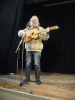

Владимир Платоненко
ПЕСНИ И СТИХОТВОРЕНИЯ
Москва
2006
к оглавлению
ПЕСНИ
Я появлюсь сразу по весне.
Я рано утром к тебе приду.
Я привезу с собой белый снег,
если в дороге не украдут.
А если даже и украдут,
то я хотя бы приеду сам,
если кирпич на мою беду
мне на макушку не свалится.
Хоть даже с каскою до плечей
никто не может уверен быть.
Много их падает, кирпичей,
людям мешая спокойно жить.
Сколько их сыплется, просто жуть.
Скольким ломают они судьбу.
Так что "спасибо" я тем скажу,
кто с кирпичами ведёт борьбу.
Мы в неё тоже свой вклад внесли,
тут-то уж совесть у нас чиста.
Помнишь, как мы по ночам брели
по незнакомым для нас местам?
И если кто не поймёт, зачем,
то я бы мог пояснить в ответ:
"Чтобы не падало кирпичей
там, где нужды в их паденьи нет".
Где-то, быть может, уже слепил
и собирается в печку класть
кто-то и тот роковой кирпич,
что будет должен на нас упасть.
Хочется думать, что не теперь,
хочется верить, что не сейчас -
много нам надо ещё успеть
прежде, чем он долетит до нас.
Видно в мозгах моих вышел сбой
сам я не знаю с каких причин.
Хотелось спеть мне про нас с тобой,
а получилось - про кирпичи.
Ну да как мог песню, так сложил.
Пусть не навеет она печаль.
Видно такая вся наша жизнь -
от появленья до кирпича.
Дождь из зарплат-премий
пусть на меня брызнет.
Я продаю время,
время своей жизни.
Чтоб не ходить голым,
чтоб не кусать фиги,
я продаю годы,
месяцы, дни, миги.
Я не сосу лапу,
я не бедняк, то есть.
Мне хорошо платят.
Я хорошо стою.
Деньги могу тратить
я не скупясь, смело.
Только чего ради?..
Впрочем, моя смена.
Время течёт кровью
через мои вены.
Жизни кусок продан.
Больше не мой, верно?
Этот кусок жирный
знаешь куда дели?
Время моей жизни
перевели в деньги.
Вздулись на лбу жилы,
мысли бегут цепью.
Разве часы жизни
могут иметь цену?
Стоят ли, скажи мне,
деньги всего мира,
пусть не часов жизни,
хоть одного мига?
Я по утрам вою,
под бой часов мерный:
"Дайте же мне волю!"
Впрочем, моя смена.
Нету в огне брода.
Что я могу сделать?
Жизни кусок продан,
я получил деньги.
Я их могу тратить,
и будет так вечно,
этого, ведь, ради
мы и живем, верно?
Нет, это всё - мифы!
Это - враньё, то есть!
Деньги всего мира,
разве они стоят?
Поднялся на небо
солнечный шар медный.
Что-то сдают нервы.
Впрочем, моя смена.
Время течёт кровью.
Нету в огне брода.
Будь на века проклят
тот, кому я продан!
Снова в бой идти пора,
скоро он завяжется.
Повстречалась с ратью рать,
кто сильней окажется?
То ли эти, то ли те...
Ждут на небе вороны.
Хорошо им там лететь
сразу во все стороны!
На земле железа звон
пополам со стонами,
а вверху, над головой -
вороны с воронами.
После боя всех их ждёт
сытный стол обеденный.
После боя - их черёд,
так везде заведено.
Ты победой не хвались -
ворон лучше ведает!
Кто б кого ни завалил,
он всегда обедает!
Кто б кого ни одолел
лишь бы злее билися.
Лишь тогда б он пожалел,
если б помирилися.
Пусть побит сегодня враг
не ликуй пока ещё!
Может, в следующий раз
мертвым ты окажешься.
Может, в следущем бою
кровь твоя закапает,
и на голову твою
сядет ворон, каркая.
А на место мертвецов,
что навеки замерли,
выйдет новый строй бойцов
повторять все заново.
Были эти, будут те...
Будут сыты вороны!
Хорошо им там лететь
сразу во все стороны!
Тяжела мужицкая долюшка.
Ты взойди, взойди, красно солнышко!
Над горой взойди над высокою,
над дубравушкой над широкою.
Обогрей людей ты нас бедных,
добрых молодцев ты нас беглых.
Не воры ведь мы, не разбойнички,
Стеньки Разина мы работнички.
Мы своим путём шли дорогою,
ни сирот, ни вдов мы не трогали,
только струги грабили царские,
только жгли хоромы боярские.
Не давали барам зажиться мы.
Мстили за страданья мужицкие.
И когда б хватило нам силушки,
запылала бы вся Россиюшка.
Да, видать, не выпало случая
для людей добыть долю лучшую.
Одолела сила боярская.
Полегла в бою рать бунтарская.
И осталась власть за боярами.
Говорят, теперь всё по-старому.
Говорят, сказнили тепереча
самого Стапан Тимофеича.
Ну да мы покуда осталися
и в полон боярам не сдалися,
за серебро-злато не куплены,
и ножи у нас не затуплены.
Так что спать боярину нечего.
Пусть свечи не гасит он вечером!
И покуда есть у нас силушка,
будем мы гулять по Россиюшке.
Только тяжела наша долюшка.
Ты взойди скорей красно солнышко!
Над горой взойди над высокою,
над дубравушкой над широкою.
Обогрей людей ты нас бедных,
добрых молодцев ты нас беглых.
Не воры же мы, не разбойнички,
Стеньки Разина мы работнички.
Я проверил ружьё
и поправил ремень.
На участке моём
снова без перемен.
Продержусь ещё день,
и, наверно, каюк.
Хорошо, не везде
брата нашего бьют.
Где-то есть и успех,
где-то, может, и нет,
но туда не успеть,
не попасть туда мне,
не кричать там: "Ура!"
на врага набежав...
Но не я выбирал,
где рубеж мне держать.
Мне врага не прогнать,
не зайти к нему в тыл,
мне надежда одна -
на другие фронты.
И, тоскою томим,
сводки слушаю я.
Тяжело, чорт возьми,
ни на что не влиять!
И, уставившись в даль,
в сердце чувствую боль -
я хотел бы туда,
где решающий бой,
чтоб в атаку поднять
полк, залегший, с земли,
пусть убили б меня,
но другие б дошли.
Только что я могу?
Моё место - вот здесь.
Если вдруг я сбегу,
кто здесь будет сидеть?
Кто: "Ура", прокричав,
встанет вместо меня,
чтобы враг проторчал
здесь ещё хоть полдня?
Я обойму вогнал,
передернул затвор...
Мне здесь быть, кто бы знал,
до каких ещё пор.
Но, пока не убьёт,
наконец, меня враг,
на участке моём
будет виться наш флаг.
Не ругайте меня матом
непонятно чего ради!
Распадается и атом,
разрывает себя радий.
Пусть не кажется вам странным,
что покоя хочу вдруг я,
но устали болеть раны
и оружье терять руки.
И совсем мне конец, вроде,
и совсем скоро я кокнусь.
Но неправда, что путь пройден,
он не пройден, вот в чём фокус.
Значит, снова идти надо,
и опять впереди битвы,
и нельзя, хоть ты вой, падать,
даже если сто раз битый.
Чтоб, однажды прорвав цепи,
сквозь огонь пройдя и воду,
всё же выбраться к той цели,
за которой уже отдых.
Только сил у меня мало,
словно я всё, что мог, прожил.
Не ругайте меня матом,
если я упаду всё же.
Я задачу свою помню
и, лишь выдохшись весь, грохнусь.
Мне постелит судьба поле
и меня отпоёт громом.
И скелет мой белеть будет,
словно вымазанный мелом.
Не ругайте меня люди,
если я не найду смены.
Да кто ж поверит,
кто думать будет,
что могут звери
любить, как люди?
Ведь каждый знает,
что чушь всё это.
Так не бывает.
Такого нету.
"Такого нету",
а между прочем,
бывает это
и даже очень.
Вот побывали б
котами-псами,
тогда б узнали б
об этом сами.
Тогда б вы знали,
что мы похожи,
что это с нами
бывает тоже.
Да'й как проверить
про всё такое,
где оно зверье,
а где - людское.
Какая кошка!
Какая сучка!
Какая ножка!
Какая ручка!
Какая хрюшка!
Какая свинка!
Какое брюшко!
Какая спинка!
Словно на рубеж огневой
выгнал я свой джип из ворот.
Может, завтра меня того,
ну а может, наоборот.
Тормозить бы давно пора.
Только где ж тормоза мне взять?
Потому наша жизнь - игра.
А без ставок в игре нельзя.
Может, завтра урву я куш.
И плевал я тогда на всё.
И России сказав: "Ку-ку!" -
на Канары лечу гусем.
Ну а может меня - бабах! -
и успеют менты словить.
И остануся я на бобах -
ни Канаров тебе, ни вилл.
Подсекут меня на бегу,
и тогда мне уже не встать -
как-никак, я пока - не гусь,
мне слабо так легко взлетать.
Ах, когда б я урвать сумел
ну ещё хоть чуть-чуть сейчас,
то потом мне б даже в тюрьме
подавали на нары чай.
Ох как я бы урвать хотел!
Аж темнеет в глазах порой.
Но уже времена не те,
поделили уже пирог.
Так что крепче держи штурвал -
наступили будние дни.
Только то, что уже урвал,
и сумеешь ты сохранить.
Так что, если сказали: "Стоп!" -
будь доволен и тем, что есть!
Но зато и тебя никто
молодой да ранний не съест.
Лишь путей избегай кривых
и отстёгивай на спортзал.
Только как, если я привык
не использовать тормоза?
Ну да чай не слечу в кювет,
ну а если слечу - судьба!
Может, завтра меня привет,
ну а может сорву я банк.
Ну, да чай не слечу в кювет,
ну а если слечу - пока!
Может, завтра меня привет,
ну а, может, и нет пока.
Словно на рубеж огневой
выгнал ты свой джип из ворот.
Может, завтра тебя того,
ну а может, наоборот.
Тормозить бы давно пора.
Только где ж тормоза-то взять?
Как-никак наша жизнь - игра.
А без ставок в игре нельзя.
Может, завтра урвёшь ты куш.
И плевал ты тогда на всё.
И России сказав: "Ку-ку!" -
на Канары летишь гусём.
Ну а может менты - бабах! -
и успеют тебя словить.
И остался ты на бобах -
ни тебе ни Канар, ни вилл.
Подсекут тебя на бегу,
и тогда уж тебе не встать -
как-никак, ты пока - не гусь,
чтобы так высоко летать.
Вот, когда б ты урвать сумел
ну ещё хоть чуть-чуть сейчас,
то тебе бы даже в тюрьме
подавали на нары чай.
Ох, как ты бы урвать хотел!
Аж темнеет в глазах порой.
Но уже времена не те,
поделили уже пирог.
Так что крепче держи штурвал -
наступили будние дни.
Только то, что уже урвал,
и сумеешь ты сохранить.
Так что, если сказали: "Стоп!" -
будь доволен и тем, что есть!
Но зато и тебя никто
молодой да ранний не съест.
Лишь путей избегай кривых
и отстёгивай на спортзал.
Только как, если ты привык
не использовать тормоза?
Ну да чай не слетишь в кювет,
ну а если слетишь - судьба!
Может, завтра тебя привет,
ну а может сорвёшь ты банк.
Ну, да чай не слетишь в кювет,
Ну, а если слетишь - пока!
Может, завтра тебя привет,
ну а, может, и нет пока.
Опять в просторы бытия
я как на сцену выхожу.
Какая разница, кто я?
Щас важно то, кем я кажусь.
Да будет мой язык остёр!
Да не узрят мое нутро.
Ведь жизнь - театр, а я - актёр,
и, значит, я играю роль.
И так до вечера с утра
ношу я маску каждый раз.
И завтра - так же, как вчера,
и после завтра - как сейчас.
Я в маске, в гриме, я в броне
закутан с ног до головы.
А между прочим, там, под ней
не то, что думаете вы.
Но вам не видно ничего.
И завтра - то же, что вчера.
Я - броневой, я - броневой,
как тот, что Мюллера играл.
И пусть я даже вышел ню -
то есть по-русски - нагишом -
я всё равно одет в броню
и закупорен хорошо.
И вот уже не разобрать,
где я, а где моя броня.
Но, кто ни разу не играл,
пусть первым выстрелит в меня.
Да не дури! Да не дури!
Довольно хвостиком вилять!
Вы все с наружи и внутри -
как будто небо и земля.
Довольно бред свой городить!
Признайте, правды не тая -
я - не один, я - не один,
вы виртуальны, как и я.
Невиртуальных в мире нет.
И мира нету ни черта.
А только есть его портрет,
который кто-то накатал.
А есть компьютерный экран.
И если он перегорит,
то всё вокруг исчезнет враз,
сколько от страха не ори.
И снова чей-то грим на мне.
И бесполезно выяснять,
доволен тем я или нет -
никто не спрашивал меня.
Пусть мир меняется в лице,
но завтра - снова как вчера.
Всё больше делается сцен,
на коих надобно играть.
И не уйти нам никуда
из этого из тупика.
Какая всё же ерунда!
А без неё нельзя никак.
Всем давно пора бы спать,
только мне не хочется.
Мне всё чудится опять,
будто дрянью кончится,
будто все мои часы
счёт ведут не к лучшему,
будто я - собачий сын,
волчий в крайнем случае.
Но за гребни городов
жизнь не скрылась шаткая.
Значит, я ещё не сдох
и не стал ушанкою.
А луна средь синевы
полная и белая.
Значит есть на что мне выть,
с кем делиться бедами.
Пусть и завтра, и вчера
жизнь кислее щавеля.
Я иду как на парад,
сверху освещаемый.
Разгоняй свою тоску!
Серый мех донашивай!
Там увидим, ху из ху -
кто есть кто по-нашему.
Пусть висит над головой
круглая и голая.
Хорошо идти под вой
даже хоть по городу.
Будет людям не до сна.
Запасутся ружьями.
Но покуда есть луна,
их покой нарушим мы.
Поленом в рожу
и прочь, как заяц.
А я - хороший!
Я не кусаюсь!
А что я лаю,
так как иначе?
Язык-то знаю
один - собачий.
Мой вой все глуше -
наверно, старый.
Не рвите душу -
она устала.
Мне так охота,
чтоб жить как люди.
Но только хохот
в ответ мне будет.
А вдруг не поздно?
А вдруг успею?
Я хвост свой поднял
как птица перья.
Давай же ходу!
Ещё не вечер!
Да не выходит
по-человечьи.
Ад доволен как никогда -
Фауст Ганс решил душу продать.
Не какой-то невежда, дурак -
доктор Фауст - известнейший маг.
Мефистофель - ада посол -
оформлять эту сделку пришёл.
Поначалу беседу вели,
а потом и до дела дошли.
Стали буквы в договор класть,
чтоб погибшего Фауста скрасть.
Если вдруг его радость возьмёт,
пускай чорт его душу берёт.
Подписали всё на ура.
Мефистофель неслыханно рад,
не пытается радости скрыть,
распевает, скача во всю прыть:
"Я пришел к вам издалека,
но дорога ко мне - коротка!
Жаль, понять тебе не хватит сил,
что к тебе я её проложил!"
А на эту всю кутерьму
со спокойствием Фауст ему,
не желая жить скучно, как жил,
поразвлечься слегка предложил.
Заскочили к ведьме одной,
молодильное взяли вино,
и отбросив с полсотни годов,
доктор Фауст - опять молодой.
Плачьте, ангелы, не таясь -
доктор Фауст живёт веселясь -
со студентами пьёт в кабаках,
совращает невинных девах.
Только время мчится вперёд,
и за годом сменяется год.
Это значит, что как ни крути,
скоро Фаусту в пекло идти.
Вот подходит Фаусту срок.
Тут к нему обращается бог:
мол, твою понимаю беду,
а не хочешь ли чорта надуть?
"Извиняюсь, - Фауст в ответ, -
у кого, может, совести нет,
мне же - в падлу, что ни говори,
тех дурить, кто меня не дурил!"
Бог руками только развёл,
а тем временем дьявол пришёл,
в дом вошёл и оттуда - назад,
захватив с собой Фауста в ад.
Бог на небе губы надул -
Иоганн Фауст нынче в аду,
угнездясь средь рогатых чертей,
служит аду наукой своей.
Чорт там знает, что он творит.
Говорят, это он создал СПИД.
А быть может, всё наоборот -
он от СПИДа излечит народ,
чтобы на земле стар и млад
мог спокойно пускаться в разврат,
не боясь, что его божий бич
в виде СПИДа сумеет настичь.
В Риме тоже не верили
в те седые года,
что уходит с империей
и язык навсегда.
Весь путь римлян повторим мы,
мы со смертью - на "ты".
Канет в бездну истории
наш язык, как латынь.
Скоро нас не останется
в городах и полях.
Только тюрки с китайцами
будут Русь населять.
Наше время оттикает,
час придет в землю лечь,
и от Бреста до Тихого,
стихнет русская речь.
Но не зря же нелёгкая
эту речь занесла
в Палестину далёкую -
в край весны и тепла.
Там язык наш и выживет,
там и вспомнят про нас,
если только не вырежет.
всех евреев "Хамас".
Обращаются Русские
к вам, Араб и Еврей,
не воюйте друг с дружкою,
помиритесь скорей!
Бросьте бойню постылую,
наш услышьте призыв,
чтоб звучал над пустынею
вечно русский язык.
Вы уж простите банальное это начало,
но без него получается песня неполной.
Бьются холодные волны о мокрые скалы.
Бьются о мокрые скалы холодные волны.
Да не о скалы, а так, о гранитные плиты,
что вдоль речушки людьми понатыканы лихо.
А над водой, над рекой, над кусками гранита
высится бронзовый Пётр - тот, который великий.
Думает Пётр, как он скоро грозить будет шведу,
или о том, сколько б нужно ухлопать народа,
чтобы надменному или иному соседу
город назло заложить на балтийских болотах.
В небе плывут облака, кувыркаясь как в вальсе,
брызги воды на камнях - как вечерние росы...
А у Петра за спиною стоит пекарь Вася.
Вася - живой, не из мрамора и не из бронзы.
Волны о камни стучат, как замёрзший зубами,
ветром холодным откуда-то резко подуло...
Думает Вася, понятное дело, о бабе -
больше он в жизни своей ни о чём и не думал.
В небе плывут облака, продолжая свой танец,
бьются о мокрые плиты холодные волны...
Памятник Васе, я знаю, никто не поставит
(бабы бы может поставили - кто ж им позволит?)
Капли тумана вокруг - хоть топор на них вешай -
всё отсырело от устья реки до истока...
Вася не будет ни шведам грозить, ни норвежцам.
Разве ему чей-то муж погрозит, да и только.
В небе плывут облака, кувыркаясь как в вальсе,
волны о камни стучат, как замёрзший зубами...
Будь моя воля, поставил бы памятник Васе -
хоть бы за то, что он думает только о бабе.
А меня ещё сделают сильным,
а меня ещё сделают смелым,
когда хряки в околышах синих
сторожить меня будут посменно.
Буду сам думать: "Я ли, не я ли
зашагал по газетным страницам?"
Мне такие припишут деянья,
что во сне не могли бы присниться.
Будет всем потрепаться в охоту,
как ножом я рубился в атаке,
из рогатки сбивал самолёты
и отламывал пушки у танков.
Буду я донельзя разукрашен,
буду я донельзя разузорен,
потому что враг должен быть страшен,
потому что бить слабых - позорно.
Эти враки никто не развеет,
и достигнут они апогея,
и тогда может сам я поверю
в эту всю про себя ахинею.
И почувствовав, как в самом деле
разливается сила по телу,
я конвой задушу как индеек,
я свалю все тюремные стены...
Ну а если не будет такого,
если лучше ничуть я не стану,
как на поле за колосом колос,
вслед за мной мои сменщики встанут.
Вышибая железные двери,
разбивая бетонные скалы,
выйдут те, кто в мой образ поверит,
кто увидит в нём блеск идеала.
Сотни тысяч и смелых и сильных
будут вправду бросаться в атаки,
влёт стрелять по околышам синим
и с тротилом кидаться под танки.
Над Лубянкой огонь заалеет.
Рухнет Кремль, на обломки расколот.
И тогда брехуны пожалеют,
что творили из мухи дракона.
Дорога о бугор
согнулась как дуга.
Скрипят под сапогом
осенние снега.
Неведомо куда,
неведомо отколь
шагает строй солдат -
ряды текут рекой.
А где-то, метрах в ста
залёг другой отряд.
Он ждать врага устал,
но ждал его не зря:
глаза глядят в прицел,
взлетит свинцовый рой,
и не успеет в цепь
разбиться первый строй.
И скажет генерал,
майор иль капитан,
что бой он проиграл -
позор, но это так;
хоть в общем - не беда,
и рано горевать...
И новый строй солдат
уйдёт, чтоб взять реванш.
То не сплетни старых баб;
знающие люди
мне сказали, что Чубайс
солнце, ох, не любит.
Ведь оно, как ни кричи,
ни копья не стоит.
За долги не отключить
солнце золотое,
не упрятать под замок,
не закрыть забором...
Светит летом и зимой
всем и без разбора.
И Чубайсу мочи нет.
Он едва не плачет,
что за солнечный за свет
люд ему не платит.
Мчится солнце сквозь года
круг за кругом вертит
и назло всем господам
на халяву светит.
Хорошо ему сиять
в небе ярко-синем.
Вся приватизация
перед ним бессильна.
А Чубайс от злости вновь
крутит толстой шеей.
Только солнце - всё равно,
Толика рыжее.
И плюёт оно с небес
весело и грубо
и на РАО на ЕЭС,
и на Толю Чуба.
Хорошо тому, кто строчит
кодексы с законами,
тому, кто привык ворочать
в банках миллионами.
А когда в кармане - ветер,
и кругом - начальники,
тяжело на этом свете
выйти в беспечальники.
Шевеля листву, как знамя,
ветер свистом дразнится.
Я иду, куда - не знаю -
ну какая разница?!
Светит свет мне по дороге
с молодого месяца.
Щас петлю б ему на роги,
да на ней повеситься!
И не будет ни законов,
ни проблем с финансами -
я навеки успокоюсь
под могильной насыпью.
Пусть банкир или начальник
без меня попробуют.
Сами будут пусть врачами
или хлеборобами.
Сами почту пусть таскают,
в шахтах пылью травятся...
Надоест им жизнь такая -
сами все удавятся.
И тогда на белом свете
станет жить так здорово -
знай, гуляй, как вольный ветер,
не паши на борова.
Жизнь - малина, право слово -
никакого бремени.
Эх, дожить бы до такого
золотого времени.
Только вот ведь заковыка -
всё ломает к лешему -
ты попробуй, доживи-ка,
если сам повешенный!
Вот такая вышла бяка,
просто невозможная.
Нет, ну жизнь, она, ребята,
всё же штука сложная!
Я совсем одурел,
потому что весна.
Расцветает сирень,
и трава - зелена.
И за душу берёт,
хоть ты верь, хоть не верь,
изумрудность берёз
и черёмухи цвет.
Через несколько дней
облетит вся сирень,
станут листья темней,
станет воздух серей.
И тогда мне опять
душу сдавит тоска,
и, зубами скрипя,
буду счастья искать.
Но пока не прошёл
этот бешеный миг.
Мне сейчас хорошо,
хорошо, чорт возьми!
Все удары судьбы
и души своей стон
я сейчас позабыл,
я их вспомню потом.
Я их вспомню потом,
и, конец торопя,
будет в душу винтом
боль вгрызаться опять.
Но пока ничего
не хочу о том знать.
Я покуда живой,
потому что весна.
Забыт житейский примитив
анахроничнейший, как скит.
Мы можем горы своротить,
ломая атом на куски,
и прорываясь в интернет,
бродить мы можем без труда
среди нехоженых планет,
в иноязычных городах...
Двадцатый век
уходит в небытьё,
а человек
все так же ест и пьёт,
иных не знает вех,
чем стол, сортир, кровать,
а что несёт нам новый век,
на то ему плевать.
А год идёт за годом вслед -
от года году не отстать.
И вот уже две тыщи лет
прошло с распятия Христа.
И если даже это - чушь,
и вовсе не жил Иисус,
я все равно понять хочу,
куда я все-таки несусь.
Идут года
и не дают отчёт,
зачем, когда,
и сколько дней ещё,
и что, в конце концов,
нас ждёт на рубеже,
с которым мы к лицу лицом
почти сошлись уже.
И как уж было сотню раз,
и будет столько же потом,
мы твёрдо верим, что на нас
уже, наверно, скажут: "Стоп!"
И проповедники нашлись,
вести готовые во мгле:
кто конец света нам сулит,
кто - царство божье на земле...
И каждый нам
спешит мозги долбить.
Но где-то же финал
и в правду должен быть!
Так, может быть, пора?
Пускай земля дрожит!
И мы ещё построим рай,
где предстоит нам жить.
Покажет время, кто был прав,
и надо ль было жизнь губить.
Но слава тем, кто не соврал,
кто верил в то, за что убит.
И если даже ждёт нас ад,
а рай мы видели в бреду,
пусть все равно, как на джихад,
за нами тысячи уйдут.
Пройдут они
сквозь пыльные века.
За днями дни
покажут свой закат.
И темно-красный дым
взовьётся нам вослед,
когда уйдут наши ряды
туда, где гурий нет.
Но пусть сто раз нас перебьют,
мы и в сто первый раз, поверь,
воскреснем, если не в раю,
то в чьей-то буйной голове.
Смотрите, люди всей земли,
на тех, кто сиднем не сидит!
Мы заслужили обелиск,
а там - и памятник, глядишь.
И кто-нибудь
по вековой пыли
продолжит путь,
который мы прошли.
Пускай был ветер зол,
который нас трепал.
Однажды кто-то горизонт
поставит на попа!
Мне ночами часто видится во сне,
что живу давным-давно не на Земле,
а мотаюсь среди звёзд, среди планет
на от времени облезшем корабле.
Я от состоянья этого устал,
но никак его, увы, не избегу.
Я давно уже, где надо, побывал,
а обратно воротиться не могу.
В этом нет моей беды, я - не при чём.
Это должен программист держать ответ.
Это что-то мой компьютер не учёл,
отклонился я на градус, и привет!
До земли теперь ужасно далеко.
Ничего, сейчас исправим мы беду.
У меня в запасе семьдесят веков,
что единою минутою пройдут.
Где-то там сейчас рождаются и мрут,
возвышаются и гибнут города,
пока я свой корректирую маршрут
и лечу из ниоткуда в никуда.
И опять Земля осталась позади,
потому что, даже зная, где она,
ты ракетою попробуй попади
в точку между трех осей координат.
Не в холодном просыпаюсь я поту -
наяву всё точно так же как во сне,
разве только на ходу, не на лету
цель преследовать свою придётся мне.
Я как будто оторвался от Земли
и отправился по небу колесить.
Моё прошлое теряется в пыли.
Моё будущее вычислить нет сил.
Я привык, и удивленья во мне нет,
когда мигом, как по росчерку пера,
обрываются все связи прошлых лет,
и сегодня не похоже на вчера.
И покуда изменяется страна,
мчась куда-то словно поезд из депо,
остаюсь я неподвластен временам
и в любую неприкаян из эпох.
Это, может быть, и лестно для души
разлететься по нирване голубой,
но как хочется, о землю опершись,
вдруг почувствовать себя самим собой.
Да от счастья не дала судьба ключей.
Обрекла лететь сквозь выцветшую муть.
Я - никто, я - ниоткуда, низачем,
и поэтому не нужен никому.
Судьбу не вызывают на дуэль.
Она не примет вызов, кто ни бросит.
Но через много дней или недель
она его ударом сзади скосит.
И зазвенит кровавая капель,
и мы узнаем, кто наш мир оставил...
Судьбу не вызывают на дуэль -
судьба дерётся безо всяких правил.
Судьба бывает и добра и зла,
но всех она сильнее. В чём причина?
А в том, что бьёт она из-за угла,
что свой удар всегда наносит в спину.
И вновь звенит кровавая капель,
и узнаём мы, кто наш мир оставил...
Судьбу не вызывают на дуэль -
она не признаёт дуэльных правил.
А что такое в общем-то судьба?
Как разобраться с ней, как сладить с нею?
Пока ей морду бьёшь, она слаба,
но чуть отступишь - вновь она сильнее.
Опять звенит кровавая капель,
и снова кто-то этот мир оставил...
Судьбу не вызывают на дуэль -
с судьбой дерутся безо всяких правил.
Встал за ночью безлунной
всё сжигающий день.
Перерезаны струны
и гитарный ремень.
Без надежды, без веры
далеко не сбежишь.
Перерезаны вены.
Перерезана жизнь.
А расплавленный свет с раскалившихся стен
на разбухший асфальт не устанет стекать.
И пейзаж городской, неподвижен и нем,
закупорен в дома, как в бетонный стакан.
Горизонт посинелый
от безумья ослаб.
Перекрещено небо,
как андреевский флаг.
Кто-то очень умело
в небе вёл самолёт,
но по синему - белым
вышло - наоборот.
В небе солнце блестит, словно капля стекла.
Ей уже не твердеть, ей во век не остыть.
И расплавившись, мысль вытекает из глаз,
покидая мозги, как пустую бутыль.
Умирают пожары,
задыхаясь в песке.
И сломал я гитару
в беспросветной тоске.
И повис перламутром
силуэт фонаря
там, где только что, утром
издыхала заря.
Я опять пену с губ
уронил на пути.
Мне на каждом шагу
все труднее идти.
Значит, пройден зенит,
значит, скоро - закат,
и слезам из глазниц
бесполезно стекать.
Значит, пройден уже
моей жизни финал -
на своём рубеже
я свой час отстоял,
и трубач, наконец,
отыграл на трубе;
только некому мне
передать свой рубеж.
Я б башки не склонял,
я б не скис, я б не сник,
если б знал, что меня
есть, кому заменить.
Если б в драке с огнём
и в последнем бреду
знал, что кто-то начнёт,
там где я упаду.
Я безбожно ослаб,
я своё отдышал.
Но из рук моих флаг
подхватить не спешат.
И не знаю я, кто
его мог бы поднять,
и что будет потом,
без меня, без меня...
Я опять пену с губ
уронил на пути.
Мне на каждом шагу
все труднее идти.
Значит, пройден зенит,
значит, скоро - закат.
Но кому заменить
на посту старика?
И на кой она чорт взялась
на пути на моём когда-то?
Положил на неё я глаз,
а она на меня - вибратор.
Ну а как тут не положить
на такого, как я, кретина?
Тёмно-серые стеллажи
перемотаны паутиной.
Вот запру свою душу в сейф,
закупорю, как части знамя!
Завтра буду таким, как все,
и никто меня не узнает!
Буду пить и не буду петь,
буду робот, а не мужчина...
Невозможно не отупеть,
если рядом - одни машины.
Но никак мне не растолстеть -
видно часто из кожи лезу.
Не могу я жить среди стен -
слишком много вокруг железа.
И не деться мне все равно
никуда с тоской со своею.
Откусить бы кому-то нос,
чтоб от этого стать смелее!
Перекрестье снегов и вьюг
навело на меня прицел.
Если завтра меня убьют,
обретёшь ты благую цель.
И засев где-нибудь в глуши,
отряхнув суеты дурман,
ты пиши про меня, пиши
очерк, повесть или роман.
Расскажи людям, расскажи,
раздувая в них жар мечты,
где, когда, для чего я жил,
так, как это увидишь ты.
Ты по-своему смысл искать
будешь в том, что я натворил,
твой роман или твой рассказ
твоим слогом заговорит.
Будет фабула там твоя,
ведь моих ты не знаешь дум,
и наверно, уже не я
по страницам твоим пройду.
Но поняв в моей жизни шиш,
всё равно ты пойдёшь писать.
Так пиши про меня, пиши!
Может кто-то поймёт всё сам.
А иначе им там в веках
не познать нас, хоть ты их режь.
Про меня не забыть никак,
не проделав в картине брешь.
Догорает моя звезда,
видно время ушло вперёд.
Тёмно-синие города
на меня разевают рот.
Я прослыть не боюсь наглецом,
даже споря со всеми вокруг.
Говорят, что любовь мол - кольцо,
а по-моему - замкнутый круг.
Не один в этом круге погиб,
всем - венков на могилы не свить.
Я когда-то прицела круги
тоже принял за кольца любви.
У прицела с проклятым крестом
кольца-взгляд - холоднее ножа.
Он поставит свой крест на любом.
Ему целей своих нет, не жаль.
И когда из далёких из мест
появилась вдруг новая цель,
был поставлен на мне жирный крест,
я остался зажатым в кольце.
Я прорвать попытался кольцо.
Я вернуть попытался её.
Я к лицу оказался лицом
с тем, кто вышел на место моё.
Это было началом конца.
Я ножом слишком лихо владел.
И как в два обручальных кольца
я в наручники руки продел.
Я не знал ещё, что скажет суд,
когда воду протухшую пил,
и табачные кольца в носу
застревали как кольца в цепи.
И гадал по тем кольцам я:
то ль условно, то ль вовсе простят,
то ль вернусь я на круги своя
может пять, может семь лет спустя...
Та, которую я зря любил,
так топила меня на суде,
что, когда б он доверчивей был,
только кольца б пошли по воде.
И понявши, что всё есть обман,
я сказал себе: "Хватит! Откинь!"
И кольцо, завершая роман,
сжалось в точку в финале строки.
Посмотрите-ка жизни в лицо,
ни ругая её, ни хваля!
Говорят, что любовь мол - кольцо,
а по-моему - просто петля.
Лучше голову сунуть в петлю,
лучше трижды свой череп разбить,
чем один раз сказать "Я люблю!"
той, что вовсе не может любить.
Над домищами
зацвела заря.
Встаньте, нищие!
Пойте Лазаря!
Ратью дружною
выйдут пачками,
всё в окружности
грязью пачкая.
Экс-солдаты тут
в ряд с уродами,
бородатые -
с безбородыми,
многодетные,
многолетние,
в шерсть одетые
и по летнему...
А истории!
А фантазии!
Есть, которые -
с Средней Азии,
есть - с Армении,
есть - с Молдавии
(в наводнении
пострадали, мол),
есть родители,
чад купившие...
Не судите их,
раскусившие!
Чушь нам мелящих
вы ль не видели?
Чай, не меньше нам
врут правители!
Всё позволено
ради денежек.
Всяк по своему
бизнес делает.
Жизнь - вещь хитрая -
как ни мучиться,
всем - банкирами
не получится.
Вот и кружатся
словно зяблики.
Им - на кружечку,
с нас - по капельки.
Что ж, так мало им,
да не выделить?
Реформаторы
больше выдоят!
Город будится.
Утро раннее.
Всем на улицы
не пора ли вам?
Зацвела заря
над домищами.
Пойте Лазаря!
Пойте, нищие!
(вид снизу)
Небо - серое
будто гарь.
Ветер с севера
гонит хмарь,
мглою чёрною
чтоб легла
на церковные
купола.
Озверевшая
ото сна,
одуревшая
спит страна.
Но корячиться
скоро ей -
у царя сейчас -
тьма идей.
Будут новые
времена -
жизнь суровая
и война,
чтоб на западных
на ветрах
вился запросто
русский флаг.
Будит кровь лится
как вода.
Будут строиться
города.
И подивятся
короли.
И подымется
Русь с земли,
оклемается,
будет жить.
И намается
с ней мужик.
Ведь не барину
вывозить
Русь-развалину
из грязи.
Недоест мужик,
недоспит,
надоест так жить
и взвопит.
Будут головы
сечь за то.
Будут голого
драть кнутом.
Будут клеймища
жечь на лбу.
Будет времище.
Будет бунт.
С Дона тихого
и с Днепра,
пьяно гикая,
выйдет рать...
Небо - серое
будто слизь.
Тучи с севера
поднялись
Грязь вонючая
под дождём...
Будет лучшее?
Подождём...
Опять с бедой встречаться
судьба моя велит.
Я знаю, что мне счастья
никто не посулит.
Что плохо моё дело,
оракул мне хрипит,
пока безумный демон
летит, пронзив эфир.
Летит он ниоткуда,
крылами шевеля,
пока дрожит до гуда
усталая земля.
Дрожит она струною,
измазана в пыли,
а сердце снова ноет,
ах, как оно болит!
Болит и кровоточит,
и мечется, как волк.
Но рано ставить точку
в вопросе: "Кто - кого?"
Но рано точку ставить,
вопрос закрыть спеша,
покуда сил осталось
ещё хотя б на шаг.
Пока остались силы
хоть метр проползти
не в сторону могилы,
а в сторону пути.
Чтоб над горами пепла
судьбой не дорвана
упрямо песню пела
последняя струна.
Пусть жизнь пропахла гарью,
и явь страшнее снов,
но я опять шагаю,
задравши кверху нос.
Отложим харакири
до будущих времён.
Пусть демон мчит в эфире,
никем не побеждён.
Как начнёт меня судьба мутузить с тылу,
так бывает - и в спасение не верю.
Прям, кажись, имей я зубы золотые,
так и те бы непременно заржавели.
А потом беда пройдёт как будто ливень,
и удача сплошь идет, какой не чаял.
Но как только приготовлюсь быть счастливым,
так опять всё начинается сначала.
Хоть ты смейся, хоть волосья рви, как трагик,
ни одна собака выход не подскажет.
Жизнь моя, как график синуса в тетради,
то подымется, то снова книзу скачет.
И не вижу я тому конца и краю -
как из века в век идёт за летом осень,
так судьба со мной играет и играет,
то к вершине, то ко дну меня подносит.
Ну какого ж это хрена, редьки, репы
и чего ещё, не знаю, пастернака
загадала мне судьба подобный ребус,
то на трон суля посадку мне, то на кол?
Может я б смирился с зеброю такою -
ведь идёт за ночью день, за утром вечер -
только кто мне даст гарантию, что с колом,
то йсть с колом, всё обходиться будет вечно?
Как меня мои паденья задолбали!
Не хочу я быть мурлом от страха черен!
Не желаю над колом стучать зубами,
как расчёска в парикмахерской о череп!
Надоело мне, как сукиному сыну,
каждый раз за миг до счастия срываться!
Надоело!.. Ах ты синус, ты мой синус!
Как в параболу тебе перековаться?
Не имел бы я заботы,
да вчера у магазина
слышу, как кого-то кто-то
обозвал собачим сыном.
И подумалось: "Однако
кто ответит мне на милость,
чем же всё-таки собака
перед нами провинилась?"
Вон хвостами как виляют!
Мы ж их жалуем не очень -
обзываем кобелями,
псами, мордами и прочим.
Ну какая ж это мука!
Каково-то щену слушать,
что его мамаша - сука,
а отец - кобель к тому же!
Я не дожил бы до завтра,
я бы был стыдом убитый,
но подумалось внезапно:
"Ну а вдруг мы с ними квиты?"
Ведь по правде, между нами,
мы умом кичиться любим,
но никто ж из нас не знает,
как на ихнем будут люди.
Может мы на их собачьем
тоже вовсе не в почёте,
тоже дрянь какую значим -
хуже язвы, хуже чорта.
Ведь, когда собаки лают,
кто ж из нас поймёт, послушав,
что они нас называют,
чем мы их, ничуть не лучше?
С бородищей смотрит длинной
на меня козёл рогатый.
Может я на их козлином
тоже буду хуже мата.
Может всё сплошную ругань
означает в переводах...
Хорошо, что нам друг друга
не дала понять природа!
Сколько нас было
на белом свете!
Жизнь летит быстро,
как степной ветер.
Кто ещё целый,
кого не стало.
По снегам белым
тёк ручей алый.
Наметёт пыли
слой на два пуда.
Времена были.
Времена будут.
Что сметёт бурей,
если б знал каждый.
Но, кто жив будет,
после расскажет.
Вьётся дым чёрный
над травой жухлой.
Всё идёт к чорту,
даже знать жутко.
Всем грозит вечер
или ночь даже.
Если крыть нечем,
как играть дальше?
У одних - горе,
у других - беды.
Тяжко жить голым,
а одёж нету.
Не горюй, люди!
Знать, судьба-доля.
Видно, не любит
бог нас всех боле.
Солнца свет тухнет.
Тяжела мука.
Кому век стукнет,
расскажи внукам!
Как знавал беды.
Как дожил-выжил.
По снегам белым
тек ручей рыжий.
Тот живет в особом графике,
кто с шаблонами не схож никак.
Ах, какая биография
у поэтов, у художников!
Будь они бродяги ль, графы ли,
будь уроды, будь красивые...
Ах, какая биография!
И все больше - несчастливая.
Просмотрите раз за разиком,
если вам позволят нервы то,
кто у нас там вышел в классики?
Ну вот хоть, к примеру, Лермонтов.
Так похвастать в жизни чем ему?
С ним судьба не больно цацкалась.
Воевал всю жизнь с чеченами
и не дожил до тридцатника..
Кто остался на обочине,
не поможешь, хоть ты плачь, тому.
За талант судьбе уплочено,
за слова судьбой заплачено.
И привычной разнорядкою
небом вновь для нас спускаются
биографии несладкие.
Сладких нам не полагается.
Режет волос бритвы лезвие,
дескать, незачем расти ж ему!
Для чего вобще поэзия?
Торговать, оно престижнее.
Никогда творить невыгодно,
и мотает нас поэтому...
Отчего ж тогда мной выбрана
биография поэтова?
Видно есть в ней что-то славное,
привлекло меня которое.
Ведь попробуй бог ли, дьявол ли
предложи мне жизнь повторную,
так ничорта б не исправил я,
и пошёл по новой корчиться...
Пусть такая биография,
но другой мне и не хочется.
Потому что, хоть мы гинули
кто в прологе, кто под занавес,
но за серыми могилами
все равно вставали заново.
Нет, не всем, как нам, потрафило
стать гранитными и медными...
Ах, какая биография!
Пусть хотя бы и посмертная.
Я стою на тротуаре или, может быть, на крыше
(впрочем, это - и неважно, хоть бы даже на заборе),
непонятный, непригодный, в угол загнанный, как крыса,
неиспользуемый вами, что весь мир добыли с боем.
Я смотрю на вас, летящих по асфальтовым дорогам,
с тротуара или с крыши (в данном случае - неважно).
Вы спешите делать дело, ведь у вас работы много,
и так многое зависит от работы этой вашей.
Если б были вы ленивы, так ещё хотя бы ладно.
Но ведь вы же не способны усидеть сложивши руки.
Вы разметили шаблоны, вы придумали рекламу,
вы заставили катиться мир по вашему маршруту.
Это раньше били ливни, это раньше солнце грело,
это раньше ударяли в тридцать градусов морозы
по велению природы; а теперь настало время,
когда вы Земле вертеться не позволите без спросу.
Если кто-то недоволен, кто-то будет упираться,
то на этот случай вами разработаны программы,
а на пульте, как на пульсе залегают ваши пальцы,
вы докажете любому, что, конечно же, вы правы.
И всем тем, что непохожи, что не встроены в систему,
надлежит перемениться или сгнить в ненужном хламе.
И поэтому всё время натыкаюсь я на стены,
но пытаюсь перелазить, обходить их не желая.
Мне плевать на ваши мысли, мне плевать на ваши планы,
ну а вам плевать, наверно, на моё существованье.
Вы меня знать не хотите, я вас - тоже не желаю.
Только вас - намного больше, и не справиться мне с вами.
Я не знаю, вам осталось долго ждать или недолго.
Может я пока мешаю вам вкушать победы яства.
Только рано или поздно, но когда-то ж я подохну
и тогда уже не буду больше вам сопротивляться.
Но однажды ровно в полночь вдруг раздастся крик: "По коням!"
и затопают копыта на кладбище позабытом,
и полезет из могилы фиолетовый покойник.
Почему не просто синий? Да чтоб вам противней было.
Я вокруг всех тех увижу, что хоть были перебиты,
но в искусственные русла свои жизни не вогнали.
И вперёд единой массой мы рванём во все копыта.
И сильнее барабана загудит земля под нами.
Нас ничто не остановит: ни конструкции из стали,
ни компьютерные сети, ни приказы, ни финансы.
Мы промчимся, всё, что было, на пути своём сметая,
только рожи оставляя перепуганные насмерть.
И когда вам станет ясно, что мы щас с вас скальпы снимем,
заорёт будильник в уши громким криком петушиным,
и вскочивши, вы поймёте, что вам всё это приснилось,
и одевшись поскорее, на работу поспешите.
И когда вы пронесётесь по асфальтовым дорогам,
то на странную фигурку, что не вписана в каноны,
ни один из вас нормальных даже взгляда не уронит -
недостойное вниманья отклонение от нормы.
Но носы свои напрасно вы задрали, как знамёна,
посчитавши, что навеки я исчез, как волос с плеши.
Я ещё вернусь к вам снова фиолетово-зелёный.
Ну а если просто синий, всё равно ведь вам не легче.
В поле рожь не сжата.
Есть патрон на брата
да по три гранаты,
да ещё штыки.
И идут навстречу,
развернувши плечи,
вот уж недалече,
ихние полки.
Их солдаты бравы.
Их идеи правы.
Им за честь и славу
рваться с нами в бой...
Не дрожи колено!
Наше дело лево.
Мы за вольный рево-
люционный строй!
Наша правда - с нами.
Вьётся наше знамя.
Что нас ждёт, не знаем,
но не побежим.
В нас братишки - сила.
Как бы ни штормило,
есть патрон на рыло,
значит, можно жить!
А над полем боя
небо голубое.
А над полем воют
пули у виска.
А к концу сраженья
выдохнется день, и
ночь укроет тенью
павшие войска.
В поле рожь не сжата.
Есть патрон на брата
да ещё гранаты,
да ещё штыки...
Кто сорвать захочет
знамя цвета ночи,
тот рискует очень
не сберечь башки.
Нам ли горевать?
Жизнь бьёт ключом!
Кружку - рыл на пять,
а потом - ещё.
А потом положь
руки на металл,
чтоб кидало в дрожь,
чтоб никто не встал.
Всех, кто залетит
сдуру под прицел,
будет молотить
наш свинцовый цеп.
Видишь, как багров
солнца круглый глаз?
Это с неба кровь
в тучи пролилась.
На степной траве
спишь как на мехах.
Пуля в голове -
это чепуха!
Пусть охрипшим ртом
в ярости боёв,
кто прийдет потом,
песню допоёт!
Наверно, на измор
(иначе взять - слаба)
опять среди домов
ведёт меня судьба,
чтоб, не стерпев игры,
конца которой нет,
среди железных крыш
упал я в грязный снег.
Наверное я зря
ищу конец пути,
и мне сквозь блеск и грязь
до цели не дойти.
В неоновой петле
забившись словно моль,
исчезну как беглец,
ненужный и немой.
И станет, чем теперь,
паршивее ещё.
Никто не будет петь,
раздувши горны щёк.
Уже ни здесь, ни там
не будет звона струн,
а будет скукота
и неба серый труп.
И если вдруг как дым
развеется мираж,
не будет в том беды -
давно ему пора.
Дыми, пожар, дыми,
сверкая как пятак.
Пускай сгорает мир,
где жизни нет и так.
Из небыли в небыль
стекает тропа.
Красивое небо
готово упасть
и, хрустнув упрямо
как соль на полу,
рассыпаться в ямах
осколками луж.
Ни рано, ни поздно,
А просто - пора.
Сейчас сюда полдень
придёт умирать.
Ударится оземь
и грязен и мокр...
Опять эта осень
не ладит с зимой.
А в - городе горы
камней и стекла.
А в городе - город
ненужный как хлам.
А в городе - стены,
асфальт и бетон.
Заполнены вены
водою пустой.
Бесцветен порядок
и нем как молчун.
Не надо, не надо,
я так не хочу!
Не скроюсь за горы
в сиянии дня.
Бесчувственный город
поглотит меня.
Воздушные недра.
Тумана песок.
Красивое небо
упало с высот
и, хрустнув упрямо
как будто стекло,
рассыпалось в ямы
и в грязь утекло.
Опять всё повторяется -
обыденность, традиция,
как будто не меняется
мозгов моих позиция.
Двенадцать - время позднее.
А час - так вовсе за полночь.
А голова заполнена,
а руки чертят записи.
Куда скажите лезу я,
сдуревший от отчаянья?
Вокруг - стена железная
безмерного молчания.
А дождь играет музыку,
а дождь стучит по жёлобу.
Как все же рифмы муторно
последние дожёвывать.
А жизнь - такая разная,
не может быть одной она -
что было, то стирается,
приходит время новое.
Приходит время новое,
не прежнее которое,
и всё, что выбил в слове я,
становится историей.
А дожь стучит по капельке.
Двенадцать - время позднее.
К чертям секунды катятся
от полночи до полудня.
И с каждым днём на улице
людей редеет крошево.
Что было, то забудется,
Годами запорошено.
И всё давно по-прежнему,
сменились только статуи.
Невольно вспомнишь Брежнева,
а то ещё и Сталина.
И никогда не кончится
такое положение.
И никому не хочется
признаться в поражении.
И все кричат, что по фигу.
А я не стану мучиться.
Двенадцать - время позднее,
а дождь играет музыку.
Сто лет не брал гитару я,
мне стала неродной она,
но если всё - по-старому,
то, значит, в бой по-новому!
Судьба мне рожу скорчила,
но я - опять на лошади.
Война ещё не кончена.
Оружие не сложено.
Двенадцать - время позднее,
а всё равно не спится мне.
А мысли снова ползают.
А рифмы колят спицами.
У памятников с шнобелей
вода стекает талая.
Приходит время новое,
а может быть, и старое.
Пусть жизнь течёт по-старому,
пусть сменится раз сто она,
но никогда не стану я
скакать в другую сторону.
В воздухе от пыли рябом
крутится крыло ветряка.
Это на бессмысленный бой
мельница зовёт седока.
Он не пожелает свернуть,
даже если с плеч голова.
Дураков не сеют, ни жнут -
сами попадут в жернова.
Точно так же было вчера,
точно так же будет и впредь.
Сцена повторится сто раз.
Только успевай посмотреть.
Будет улетать в никуда
сорванный с берёзы листок.
Будут уходить поезда,
безымянных мча на восток.
Но, себя сто раз загубив,
снова подымайся с земли.
Тот, кто не похож на других,
должен не бояться петли.
Чтобы на земле голубой
людям задышалось легко.
Чтобы крови жаждущий бог
захлебнулся б ей до икот.
Кто-то должен сгинуть зазря,
заплатив за прочих собой.
Машет лопостями ветряк,
вызывая новых на бой.
Серых красок силы
никуда не деть.
Серая Россия -
родина дождей!
Льётся с серой крыши
серый водопад.
Нету алых вишен.
Нету белых хат.
Огляди, что хочешь,
всюду - серый цвет.
Нет ни дня, ни ночи -
сумерки весь век.
В сероватых грёзах
опускают лбы
серые берёзы,
серые дубы.
Оттого как осень,
как дождя слеза
у великороссов
серые глаза.
Оттого-то ёлки -
В сумерках серей,
и стыдятся волки
яркости своей.
Слышишь, канонаду
ветры донесли.
Серые отряды
воевать ушли.
Пусть вокруг расселась
стая воронья,
но презренна серость
мирного бытья.
Серость всех достала.
Люди ждут конца.
Хочется усталым
серого свинца.
По рядам угрюмо
пронеслось: "Ура!"
Битвы план обдумал
серый генерал.
Время - на пределе.
Щас сквозь серый дым
побегут редея
серые ряды.
Серым снегом взбита
мокрая постель.
Занесёт убитых
серая метель.
И уйдут как флаги
неимущих срам
серые телаги
в серых пятнах ран.
И клочками сена
неба круглый скат
в цвет кроваво-серый
выкрасит закат.
Кукожится трава.
Весны пора прошла.
Зелёная листва
чернеет на стволах.
Ещё палит огнём
от солнца летних дней,
но реже с каждым днём,
становится темней.
Мне б лето - что весна,
одна и та же суть,
когда бы я не знал,
что осень на носу.
За осенью спешит
зима, зима, зима.
Она меня лишит
последнего ума.
Начнёт свистеть метель,
секунды подгонять,
и буду я хотеть
бег времени унять.
Но треть зимы пройдёт,
потом - другая треть,
и я ещё на год
успею постареть.
Спешит зима скорей.
Не хочет опоздать.
Зимою в январе
меняются года.
И в год из четырёх,
беря расчёт с людьми,
казнит жестокий бог
тех, кто ему не мил.
Я знаю, что придёт
очередной зимой
тот високосный год,
который будет мой.
Хочу, не вмёрзнув в лёд,
увидеть хоть одну
за длинным февралём
идущую весну.
Пускай уж смерти пасть
хватает на бегу.
Я не хочу упасть
в дожде или снегу.
Пускай сонцеворот
ещё не настаёт,
когда мне выдаст счёт
мой високосный год.
Этот город течёт подо мной, как большая река.
Этот город привычней всего наблюдать свысока.
Я гляжу, как горит на стене за норою нора -
разноцветными окнами светится серый экран.
Я гляжу на табло, что горит разноцветным огнём.
Я гляжу на квадратный огонь и на женщину в нём.
Мой объект наблюденья, ночное виденье моё -
я её зафиксировал, я изучаю её.
Между нами всего метров сто или двести легло,
Но при этом меня от неё отделяет стекло.
Она молча стоит у окна, свои мысли храня.
Она ждёт и давно, но наверное ждёт не меня.
А может быть, я не прав, может, всё это - вовсе не так?
Сколько лет я слоняюсь по крышам как старый кошак!
Может быть, она встретить готова меня хорошо.
Я войду к ней в подъезд, позвоню и скажу: "Я пришёл.
Я пришёл из ночи, истомившейся в звёздном поту,
где тряпьём облаков закрывает луна наготу,
где огромное небо от пятен галактик рябо,
где сквозь чёрные дыры сумеет пройти не любой.
Я давно за тобой, провода обрывая, следил.
Я устал перескакивать с крыши на крышу один.
Выходи, я тебя проведу сквозь комет белый дым,
мы уйдём с тобой в ночь, оставляя на крышах следы!"
И ответ её будет банален и необратим,
и со звоном захлопнется дверь перед носом моим,
а она позвонит, чтоб скорей присылали ментов.
И уйду я в окно, не оставив в подъезде следов.
И только ветер задует и будет в ночи тучи рвать,
чтоб созвездья во тьме мне дорогу могли освещать.
А на млечном пути молока - хоть залейся до дна.
Лучше б был винный путь - я бы выпил стаканчик вина...
Солнце село за холмы в сотый раз,
разгораются костры у реки,
и кружится над огнём мошкора,
и слетаются в огонь мотыльки.
Мотыльки танцуют возле огня.
Мотыльки желают пламя обнять.
Мотыльки готовы жизнь променять
на пылающие света клочки.
Если всех их обгорелых сложить,
то, пожалуй, потеряешь им счёт.
Сколько глупых отдало свою жизнь,
чтобы умным стало лучше ещё!
Звёзды сыплются как пыль в коридор,
гибнут орды возле стен городов,
и склоняются пред новой ордой
обитатели дворцов и трущоб.
Утро высветит тела на столбах.
Застучат по мостовой сапоги.
Кончен праздник, кончен пир, кончен бал,
кто не с нами, тот пропал, тот погиб.
Не сточились у винтовок бойки,
и привинчены надёжно штыки,
и шагают на рассвете полки,
шаг чеканя, маршируют под гимн.
Не сменилось ровным счётом ничто.
Завтра снова будет так, как всегда.
Разве только стало больше крестов
на могилах и мундирах солдат.
Тишина опять настанет везде.
Идиоты остаются без дел.
И уходит из мозгов дребедень -
охлаждается башка как со льда.
Только снова нашей жизни деньки
время мерит скупо так, скупо так.
И слетаются в огонь мотыльки,
потому что без огня - скукота.
Мотыльки летят на огненый свет
в Ленинграде, в Оренбурге, в Москве,
и безумцы посылают привет
не умеющим огонь облетать.
Приятно, словно мёд в уста,
легко, как дважды два
канонизировать Христа,
распяв его сперва.
Под прежде проклятый мотив
на гроб кладут цветы,
и кто вчера был еретик,
сегодня стал святым.
А суд готовят как всегда
к разбору новых дел.
И безработным никогда
не будет гвоздодел.
Стругая новые кресты,
от пота взмок столяр.
И дожидаются Христы
назначенных им кар.
Я - один как дурак,
я - один как кретин,
потому что не так,
потому что один,
что совет тыщи ртов
не беру я в расчёт
и не верю я что,
Волга в Каспий течёт.
Но пойди возьми
сладь с знакомыми!
Весь напичкан мир
аксиомами.
Всё разделено
мыслью чёткою:
известь - белая,
сажа - чёрная.
Но башкой я кручу,
аж совсем окосел,
и никак не хочу
быть таким же, как все.
Не стремлюсь я ничуть
удивить чем-то вас,
просто общая чушь
для меня - не указ.
Ведь случается -
за мгновения
изменяются
представления.
Чудо сделала
мысль ньютонова:
нету белого,
нету чёрного.
И готов хоть со всем
я со светом на бой.
Мне плевать, как там все,
я хочу быть собой.
Если ждут сотни бед,
значит дело - труба.
Но кто прав, а кто - нет,
пусть решает судьба.
Я стою, плюю
на обычаи,
чтобы душу мою
не безличили,
чтоб учёные
люди делали
известь чёрную,
сажу белую.
Сколько б слез я не вылил
океана не пресней,
но ещё не довыл я
до конца своей песни.
Потому что как знамя
я торчу на распутье.
Потому что не знаю,
Какой выберу путь я.
Я бы жил, как другие,
что на месте зависли,
и мозги б не рубили
мне безумные мысли.
Гром прошёл б стороною,
я б делил время вскоре,
между толстой женою
и работой в конторе.
Я подушки бы к заду
прицепил, чтоб не били.
Но для этого ж надо
стать таким, как другие.
А как стану я, если
снова просятся в глотку
недопетые песни,
недопитая водка.
Я бы рвался на драку,
шёл бы на смерть и через,
если б кто-то оплакал
мой раздробленый череп.
Пусть на скрученной грубо
на верёвке б висел я,
но разбитые б губы
улыбались в веселье,
если б знать, что хоть робко,
как свет солнца в ненастье,
но хоть в чьей-то коробке
затеплилось согласье,
луч, пусть тонкий как розга,
но прошёл сквозь туманы,
и на глобусе мозга
запылали вулканы.
Только уши все дружно
затыкают с чего-то.
Никому, знать, не нужно
слышать крик идиота.
Звон набата не будит.
Притупились рапиры.
И попрятались люди
по отдельным квартирам.
Срок пришёл - зажирели,
вырождаются люди.
На словесных дуэлях
секундантами - судьи.
И чтоб прочим не тыкал
я в глаза своей песней,
есть в столице Бутырка,
а за ней ещё - Пресня.
Так идти ли без толку
мне под градом ударов?
Щас на каждого волка
по пять штук волкодавов.
Вот и мысль от того-то,
что подохну без гроба:
жить как все неохота,
а иначе - попробуй!
Есть остров - громаждение скал,
исхлёстанных водой океана.
Корабль к ним ни один не пристал,
хотя туда рвались капитаны.
Не бросить якоря у скал стен,
не выжить среди волн в скалы бьющих.
Живут там только стаи сирен,
жестоких и красиво поющих.
И люди из любых стран земли
охватывались здесь нетерпеньем.
И к острову вели корабли
матросы поражённые пеньем.
Но камни пробивали борта,
пучина под ногами кипела,
и пена у матросского рта,
сливалась с океанскою пеной.
Костями здесь усеяно дно.
Наверно и опаснее стало:
быть может, бывшей мачты бревно
очередной корабль разбивало.
Но перед тем, кто вновь проплывал,
опять вставала альтернатива:
кто жив был, тот сирен не слыхал,
кто слышал их, те не были живы.
И всё же один греческий царь
решился выжить пенье послушав.
И он его везущим гребцам
покрепче залепил воском уши.
А чтобы самому не рвануть,
велел себя скрутить он канатом,
и лишь тогда корабль начал путь,
когда был к мачте царь припечатан.
И жизни он не отдал взамен -
канат не отпустил его тела.
С тех пор никто не слышал сирен.
Наверно, никому не хотелось.
И так как никого не привлёк
из тех, что в океане скитались,
скалистый небольшой островок
забылся и на картах растаял.
Атакующим не рассмотреть
между жизнью и смертью границу.
Кто-то должен в бою умереть,
не дойдя до вражьих позиций.
Эта мысль - далеко не нова,
в утвержденьи её нет находки.
Кто-то должен свой бег оборвать,
не коснувшись штыком вражьей глотки.
Ему может хватило б сил
сделать больше, чем целые роты,
но кого-то должен скосить
ураганный огонь пулемёта.
Кто-то должен в лаве атак
ткнуться носом, мешая кровь с грязью.
На куски изрублен Спартак,
и в Москве четвертован Разин...
Не хотят считаться ни с кем
из литого свинца метели.
Кто-то должен в последнем броске
умереть не дойдя до цели.
Только будут за гимном гимн
от Китая до края Европы
прославлять того, кто погиб,
не ворвавшись в чужие окопы.
- Не жизнь, а маета.
Забили до безумия.
Но говорят, Спартак
укрылся на Везувии.
- Нашёл трепать о ком.
Родился ты трещёткою.
Спартак - он Спартаком,
а плётка - она плёткою.
- Не жизнь, а маета.
И хуже тем, чем далее.
Но говорят, Спартак
гуляет по Италии.
- Нашёл о ком трепать.
Лишь боль травить рассказами.
Ему легко гулять,
а мы железом связаны.
- Не жизнь, а маета.
Что день - то унижения.
И говорят, Спартак
вчера убит в сражении.
- Да что там говорить!
Пускай кому не нравится,
силён великий Рим,
и с ним рабам не справиться!
Одурел я, когда,
моё тело сдавила вода.
Но с пути не свернул,
продолжал уходить в глубину.
Лишь у дна я движенье прервал
и узрел незнакомый простор.
Я песчаной дорогой шагал
у подножья просоленных гор.
Там в пещере меж скал
осьминог нереиду ласкал.
Многорук и нерыхл
он один заменял четверых.
Я пытался узнать у него,
где нашёл он подругу себе,
но понять не сумел ничего,
и пришлось покориться судьбе.
Лишь угрюмо легла
мне под ноги как блин камбала
широка и плоска -
не мадам, а, простите, доска.
Нет, похоже, что счастье меня
не найдёт и в глубинах морей.
Я хочу афалину обнять,
а вокруг - только стаи мурен.
Да ещё нагловат
надо мною колышется скат,
и морская свинья
проплывает кого-то жуя.
Солнце - вечно в пути.
Солнце может идти.
Санитарам его не поймать.
Вот опять видно мне
сквозь решетку во сне,
как спускается солнце в дома.
Вот я слышу: в ночи
зазвенели ключи -
запирают меня на замок,
чтоб мне быть взаперти,
чтоб мне в дверь не пройти,
чтоб уйти я отсюда не мог.
Виновата она.
Виновата весна.
Виновата луна за окном.
Чем совсем без весны,
чем не видеть луны,
лучше просто уснуть вечным сном.
Я лишён фикс-идей,
не кусаю людей,
не хожу я до ветру в штаны.
Я мозги не пропил,
я - не полудебил,
просто жить не могу без луны.
А врачам наплевать.
Им меня не понять.
Потому и с решёткой окно.
Потому в конце дня
запирают меня,
чтоб не мог я уйти за луной.
Я бы жил, не боясь,
я бы пил, не таясь,
я бы песни весёлые пел,
я бы горя не знал,
я б по крышам гулял,
если б выйти отсюда сумел.
Но решётки пруты -
и тверды и толсты,
и на помощь никто не придёт.
А луна - далека,
а луна - высока,
а луна людям спать не даёт.
Китам, хоть они великаны,
дожить до столетья не просто -
на илистом дне океана
лежит свежевымытый остов.
Имел он семь футов под пузом,
и волны струились по скулам,
но мозг его съели медузы,
а печень дожрали акулы.
Плывёт между рёбер ланцетник,
прибывший с друзьями на выпас,
и краб, закусив спермацетом,
по мёртвому реквием выдаст...
Плевал он на крабов-омаров,
покуда не ведал могилы,
но как-то объятья кальмара
порвать ему сил не хватило.
И поднялся дух иглокожих,
а образ дельфина был черен,
когда, разорвав его кожу,
вода ему хлынула в череп.
Касатки рыдали под вечер,
а круг каракатиц был весел.
И звёзды морские на плечи
теперь ему можно повесить.
Дурели от радости губки,
но делали постные рожи.
Хвалу воздавали их губки
тому, кто куснуть их не сможет.
Скелет под водой тёмно-синей
как памятник лёг на погосте,
и жгучие пальцы актиний
ласкают холодные кости.
Не двинется хвост великаний,
ломая кораллов соцветья.
Хребет, замурованный в камень,
найдут через тысячелетья.
А сивучи воют от горя...
Но смерти одной слишком мало,
и новый боец акваторий
сплетается с телом кальмара.
Я не умер от полученных ран,
не зарублен палашом на бегу.
Мне давно домой вернуться пора,
только вот, никак найти не могу.
Я не помню, на какую войну
увели меня стрелять и колоть.
Двести лет меня держали в плену.
Сгнил мундир. Да не сгнила моя плоть.
А теперь иду, не знаю куда.
Всё - иначе, всё - другое совсем.
Изменились с той поры города,
и деревни уцелели не все.
Ночью снятся мне привычные сны,
как стучат по мостовой сапоги...
Возвращаюсь я обратно с войны.
Я же без вести пропал - не погиб.
Отказались меня в рай принимать,
хоть и был я человек неплохой,
потому что на земле моя мать
не поставила свеч за упокой.
Всё не верила, что пробил мой час,
всё ждала, что ворочусь я во двор,
всё за здравие горела свеча.
Вот, пожалуйста - здоров до сих пор.
А в аду мне Сатана говорит:
"Без тебя, служивый, хватит гостей.
Ты пойми, ты на войне не убит,
вот бумага - ты пропал без вестей!"
Я под Лейпцигом не взорван ядром,
я под Плевной не убит наповал,
и на Харьковщине в сорок втором
я не умер, я без вести пропал.
Мне не надо ни чинов, ни наград,
покажите мне деревню мою,
чтобы без вести пропавший солдат
наконец-то воротился в семью.
Я ж в пятнадцатом плевал на иприт,
я же выжил в сорок первом зимой,
я же без вести пропал - не убит.
Покажите мне дорогу домой!
Филька и не клал на Фроську глазу -
Их венчали с барского приказу.
Так они вдвоём и жизнь прожили:
спали врозь, но сына народили.
Старый сыч с седою бородою
окунул мальца в лохань с водою
и, скривив отвратнейшую рожу,
проревел: "Крещается раб божий!"
А когда подрос сей раб Федулка,
свистнул он у барина шкатулку.
И за это парень плутоватый
в первый же набор пошёл в солдаты.
И служил он, как другие служат,
тойсть не лучше всех, но и не хуже.
Зуботычин получал немало,
но и похвала перепадала.
Он из многолетней службы длинной
отслужил двенадцать с половиной,
и упал картечиной сражённый
за минуту до Багратиона.
Ну а как грехи при жизни были
в рай его за это не пустили,
а в аду поставили героя
на часах у чана со смолою.
С той поры в аду Федул и служит,
не пускает грешников наружу,
смотрит, чтоб в смоле они сидели,
чтоб из чана вылезти не смели.
Было как-то раз - егонный барин
(коего в том самом чане варят)
попросил, мол, сделай исключенье,
дай мне убежать из заточенья!
Но Федул ему ответил сразу:
"Не могу нарушить я приказу!"
Обучили хорошо когда-то
дисциплине русского солдата...
Бельдюга, пелядь, простипома,
Украсят стол любого дома.
Рекламное объявление застойных времен в рыбном магазине
По дну морей и рек
гулял, вздыхая громко,
какой-то старый хек
с облезлой простипомкой.
Гулял как рыба нем
подводною тропою
и думал между тем
он про себя с тоскою:
"Пусть глаз не колят мне,
тем что со мной - подруга,
что изменил жене.
Жена моя - бельдюга!
Не я же виноват
(с любого, кстати, взгляда)
в том, что какой-то скат
сегодня с нею рядом.
Дошло до срамоты.
Она, видать, заелась.
Привыкла, что киты
вокруг неё вертелись.
В её башке ума
не больше, чем в котомке.
Теперь она сама
не лучше простипомки.
Он погуляет с ней
и сгинет как виденье
(видали мы ершей
такого поведенья!)
Она ж как сельдь с тоски
засохнет не иначе,
и будут судаки
о ней потом судачить..."
По дну морей и рек
гулял, вздыхая громко,
какой-то старый хек
с облезлой простипомкой.
А где-то пьян и рад,
что не один - с подругой,
гулял какой-то скат
с очередной бельдюгой.
Кто - как есть - дурак,
а кто - вроде бы.
Я - не просто так.
Я - юродивый.
Тела нет тощей.
Морда - глупая.
Без жены, без щей,
без тулупа я.
Кто - простой дурак,
бед не знающий.
Я - не просто так.
Я - страдающий.
Я - по снегу бос,
с солнца выгорел,
не стригу волос
и с веригами.
Где кабак избой
скособоченной,
ем сухарь я свой,
в луже моченный.
Здесь кто водку пьёт,
кто слоняется,
а кто жисть клянёт
да ругается.
Кто - лишь за глаза
и не более.
Я - могу сказать.
Мне - позволено.
Пусть я жив едва
с люта голода,
я царю плевал
прямо в бороду!
Пусть вас страх берёт,
люди лучшие,
как простой народ
меня слушает!
Напрягают слух
даже лошади,
как ору за двух
я на площади.
Мне не вяжут рук.
Я - непытаный.
Не топтал мой труп
конь копытами.
Мой щербатый рот
усмехается -
за меня народ
заступается.
И держу я речь
к люду голому,
за какую с плеч
рубят голову.
Брось меня стращать,
рожу выбеля!
Мне народ смущать
до погибели.
И пущай постель
мне не постлата!
Заметёт метель
мои кости-то.
Будут год спустя
утром раненько,
будут век спустя
утром раненько,
будут, лоб крестя,
утром раненько
на моих костях
плакать странники.
Через час над зоной
встанет неспеша
солнца раскалённый
ярко-красный шар.
Знаменем японца
светится оно.
Солнце мое, солнце!
Красное пятно!
Зэки под гитару
любят распевать,
как в домишке старом
ждёт кого-то мать.
Ну да мне-то что же?
Я-то тут при чём?
У меня ведь тоже
есть и мать и дом.
Я - солдат и только
(и не я один),
так, что дали сколько,
лучше отсиди!
Чудо не свершится.
Ждёт безумцев гроб.
Если кто решится,
я обязан - в лоб.
Только всё на свете
могут здесь посметь.
Как я не заметил,
что ты близко, смерть!
Сон сжимал мне веки -
через час - заря.
Это время зэки
выбрали не зря.
Я уйду без стона,
растеряв в траве
красные погоны
с буквами ВВ.
Помирать мне горько
даже за закон.
Зорька моя, зорька!
Огненный погон!
Кровь траву омочит
из башки пробитой.
Я сегодня ночью
застрелил бандита.
Он бежал на волю,
ну а я заметил...
По нему провоет
свою песню ветер.
В голове как в бочке
всё гудит до рвоты.
Я сегодня ночью
застрелил кого-то.
Он в траву уложен.
Он упал без стона.
Он теперь не сможет
нарушать законы.
Боль уйти не хочет
До скончанья века.
Я сегодня ночью
кокнул человека.
Он друзей не поит.
Он жену не хочет.
Он теперь спокоен,
ну а я - не очень.
Эх, ночка, ночка чёрная,
вечернее житьё!
Минорное, мажoрное
гитарное вытьё!
Паршиво без ударника
играть, и даже петь,
но моего напарника
забрали в ЛТП.
Здесь не гнетут сомнения,
кому играть и что.
Здесь спросом предложение
диктуется на сто.
Поэтому не балуюсь,
пою не что хочу -
всё больше - Розенбаума,
а то - и вовсе чушь.
Профессия свободная,
да больно тяжела.
Ой, мама, мама родная,
кого ты родила?
Банальная история,
привычная как хмель:
хотел - в консерваторию,
а вышел - на панель.
Чехол с подкладкой стёртою
оставлен на земле,
и пятаки с пятёрками
мешаются в чехле.
А кто-то нудным голосом
советы мне даёт
подстричь короче волосы
и двинуть на завод.
К полуночи закончится
гитары торжество.
А мне чего-то хочется,
и не поймёшь чего.
А камень серым саваном
обнимет в сотый раз,
и завтра - то же самое,
что нынче и вчера.
Но вновь рукою твёрдою
я дёргаю все шесть,
и кровь бежит аккордами
по телу и душе.
Летит мой голос к каждому,
чтоб скуку прогонять.
Сограждане! Сограждане!
Послушайте меня!
(песня покойника, которого откапывают археологи)
Как странно, друг милый,
что камнем прижатым
не вечно в могиле
придётся лежать нам,
что в землю до боли
лопатой вгрызаясь,
найдёт нас с тобою
какой-то мерзавец.
Да мы бы при этом
наверно, завыли,
когда б не скелеты,
когда бы живые.
Но лёгкие сгнили,
и извергу в ухо
не выжать из гнили
отчаянья звуков.
И будут нервозны
нам эти секунды,
и станет нам воздух
настоем цикуты,
когда с неба гости
в могилу к нам влезут,
чтоб чистить нам кости
кусками железа.
Но будет, друг милый,
гораздо паршивей,
когда без поминок
истлеем как вши мы,
когда за потоком
обыденных буден
однажды потомок
о нас позабудет,
когда на пригорок,
на холм этот старый
потомок пригонит
мычащее стадо.
Но той же монетой
получит он плату -
без прошлого нету
с сегодняшним сладу.
Пусть попусту ветер
наш прах не развеет.
Нет пытки на свете
сильней, чем забвенье.
И тот, кто спокоен,
копая наш жальник,
хоть людям напомнит,
что здесь мы лежали.
Раскроется снова
могила, но бес с ней!
Не выкинуть слова
из сложенной песни.
Пусть в землю до боли
лопатой вгрызаясь,
найдёт нас с тобою
какой-то мерзавец.
Сколько тех, к кому жизнь строга,
ходит нищих и голеньких!
Тот ушёл от тюрьмы в бега,
этот стал алкоголиком.
А тебя от какой межи
завернуло под горочку?
Почему не сложилась жизнь?
Не ответишь без горечи.
Оглянись на своё вчера,
как тогда шли дела твои?
Вроде был не совсем дурак,
вроде даже талантливый.
Почему же тогда, скажи,
раздавила вселенная?
Почему не сложилась жизнь?
Не сложилась, и хрена ли?
Привыкаешь со всех сторон
видеть стены железные.
Поезда подымают звон,
по тебе звоня рельсами.
Видишь, путь твой куда лежит?
Скоро дно, дальше некуда.
Почему не сложилась жизнь?
Объяснил бы, да некому.
Для того ли в конце концов
ты встречал жизни зарево,
чтоб тебя дождь хлестал в лицо,
солнце круглое жарило?
Хоть рыдай, хоть от смеха ржи,
ничего не исправится.
Почему не сложилась жизнь?
Знать такая избралася.
Багровое зарево
полнеба изжарило.
Удастся ли заново
родится на свет?
Но голосом будящим,
не смолкшим в гробу ещё,
тем, кто слышит в будущем,
мы шлём свой привет.
Простите пожалуйста
нам эти пожарища!
Никто из товарищей
не выйдет живым.
Но мне всё же кажется,
что не в чем нам каятся,
что мы, как окажется,
не зря тут стоим.
Пощады не знали нам.
Но шли мы под знаменем,
окрашенным пламенем
народной войны.
И если так станется,
что нас не останется,
о нас вам достанутся
легенды и сны.
И люди грядущего,
поблажек не ждущие,
сумеют и пуще нас
раздуть ураган,
чтоб поднялось заново
багровое зарево,
чтоб кровию залило
окопы врага.
Багровое зарево
полнеба изжарило.
На землю как занавес
упала заря.
Но мне всё же кажется,
что не в чем нам каятся,
что мы, как окажется,
помрём не зазря.
Разгоняю ногой дерьмо я,
пробираясь тропой своей.
Я - поэт городских помоек,
строек, свалок и пустырей.
Здесь вовеки не встретишь рая,
красоты не заметишь тут.
Я - певец городских окраин,
где обломки лесов гниют,
где на свалках высятся горы,
где б'рахла - хоть врагу дари.
Я привык ненавидеть город,
добивающий пустыри.
Я привык загорать на крышах
и любить в крапивной глуши.
Только жаль, что меня не слышат
оглушённые шумом машин.
Грязь с меня всё равно не смоет
даже самый чистейший душ.
Я - поэт городских помоек,
чердаков и вонючих луж.
Я люблю гнилые просторы.
Мне привычки поздно менять.
Я привык ненавидеть город,
породивший однажды меня.
Над землёю стоит дым.
Пулемётчики бьют в лоб.
Все дороги ведут в Рим -
все дороги ведут в гроб.
По дороге идя, вдруг
ты наткнёшся на свист пуль,
опрокинется в пыль труп,
и окончится твой путь.
Над землёю стоит смрад.
Ты не знаешь ещё? Знай:
все дороги ведут в ад,
ни одна не ведёт в рай.
Взрывы бесятся вокруг,
далеко-далеко тыл.
На дороге лежит труп.
На дороге лежишь ты.
Нам людскую любовь
не сыскать никогда.
Не зазря ж нас с тобой
загоняли сюда.
Да, уж коли не в бровь,
а в сам-глаз говорить,
пили мы людям кровь,
прямо как упыри.
Что ты губы надул?
Али ложь я сказал?
Нас за это в аду
будут бесы терзать.
А пока, что нам бес?
Здесь ли беса встречать?
Мы идём через лес,
дробь зубами стуча.
На таком холоду
ночью глаз не сомкнём.
Говорят, нас в аду
будут жарить огнём.
Говорят, что варить
будут нас там в котле.
Им легко говорить,
отогревшись в тепле.
Им легко. А меня
не оставит вопрос,
вдруг в аду нет огня,
есть такой же мороз?
А уж коли не так,
то чего ж нам тужить -
будет нам адский мрак
как награда за жизнь.
Разве пламя страшней,
чем тунгусский мороз?
Мы на адском огне
будем рады до слёз.
Это лучше, браток,
ты послушай меня,
чем опять - на восток,
кандалами звеня.
У села Рудоцветь
есть дворы для гостей.
Там за звонкую медь
сколько хошь ешь да пей.
Вот и мы через час
подойдём к тем дворам.
Меди нету у нас,
есть лишь два топора.
Ну, в разбой, так в разбой!
Что заветы Христа,
раз готовы с тобой
мы об аде мечтать?
Хлеба нет - в ус не дуй,
можем кровушку пить!
Нам за это в аду
будут баню топить.
СТИХОТВОРЕНИЯ
Ты средь людского гула
слышать, наверно, привык,
что как-нибудь погубит
дерзкий тебя язык.
Вот он погибель и гонит.
Видишь, как через зал
"движется дикий горец"
(так, что ли ты сказал?)
Только ведь, между нами,
не велика беда.
Ты ведь прекрасно знаешь,
что тебе светит, да?
Знаешь? В самом деле?
Ну, так скорее пусть!
Что эти все дуэли
против чеченских пуль?
Раз уже сложена песня,
чтобы тебя отпеть,
что тут плохого, если
кончится все теперь?
Лучше уж в лоб, чем с тылу.
Лучше уж, видел чтоб.
Лучше уж пусть Мартынов,
чем неизвестно кто.
Пусть же с тоски завоет,
пусть изрыгает брань
храбрый чеченский воин,
ждавший тебя в горах.
Шашку рванув из ножен,
напополам рубя,
он никогда не сможет
в битве сразить тебя.
Больше, с надменным видом
дерзости говоря,
не нанесёшь ты обиду
гордым сёстрам царя.
Но до скончанья века
царь не получит весть,
что от руки абрека
Лермонтов вышел весь.
В моих стихах цветам не расти.
В моих стихах - железо и медь.
Я не умею венков плести
и никогда не буду уметь.
Только не надо меня упрекать -
я без венков завоюю зенит.
Ты посмотри, какая строка!
Нет, ты послушай, как стих звенит!
Каждый ли высечет из строки,
что из нее высекаю я?
А кто-то может плести венки
И различает хорей и ямб.
Мне на хореи-ямбы плевать,
я не желаю в их смысл входить.
А кто-то может зарифмовать
строки в два слога, и даже в один.
Я не пытаюсь их отмести.
Всех одним гребнем не причесать.
Кто-то же должен венки плести
и палиндромами писать.
А что я на похвалы им скуп -
знать мне их прочувствовать не суждено.
Я загоняю рифмы в строку,
как загоняют гвозди в бревно.
Только не надо меня упрекать -
время нас всех соберёт в одно.
Кто-то же должен плиту высекать,
чтоб было куда положить венок!
Не просто держать удары судьбы.
Кто б только знал, как мучился я,
когда, как всегда бывает, о быт
разбилась любовная наша ладья.
Года не стёрли мою любовь
и не уменьшали моей тоски -
кольцо, подаренное тобой,
вросло мне в палец левой руки.
Покуда я проклинал судьбу,
ты избегала встреч, а потом
ты укатила в Санкт-Петербург,
а я уехал на Дальний Восток.
Там в морду Азии бьёт волна,
а я окунулся надолго там
в экологический шпионаж
и экологический саботаж.
По мне отзвонили колокола,
и пёс заранье по мне отвыл.
Я за такие взялся дела,
что стоить должны были мне головы.
Но я нырял в кусты и в траву
и успевал уйти далеко.
А ты выбрасывала в Неву
бутылки от пепси и кока кол.
Про хронологию позабыв,
не зная завтра, не помня вчера,
я ел неизвестные мне грибы
и грелся тусклым огнём костра,
чтоб не было экокатастроф,
чтоб Землю новый потоп не залил.
А ты брела через город петров,
швыряя обертки в Финский залив.
На каждом новом своём рубеже
гадал я, как я ещё не погиб,
и сотню раз мне казалось уже,
что я не выберусь из тайги.
Но вновь выползал я на ленты трасс,
и к новым просторам несли меня
автомобили и катера,
почтовый поезд и товарняк.
Не мог послать я по почте весть
(в тайге не бывает почты вобще),
и прокатился слух по Москве,
что я подох от укусов клещей.
Слух разлетался, как стук топоров,
и расползался, будто желе.
Но я остался жив и здоров
и даже малость потяжелел.
И утром в Москву ни свет, ни заря
ввалился, как будто и не уезжал,
ни зуба, ни волоса не потеряв,
болезней, контузий и ран избежав.
Но там, в дремучей чаще лесов,
куда я нырял, как в пучину кит,
тобой подаренное кольцо
слетело с пальца моей руки.
Они говорят всю правду,
пока у них денег нету.
Они получают гранты,
они издают газеты.
И горло смочивши в пиве,
орут безо всякой меры.
Они - бунтари лихие,
такая у них карьера.
В таком необычном стиле
ведут они свой путь к злату.
Они себя раскрутили,
и этим они богаты.
И ветер им в парус дует.
И жизнь им дорогу стелет.
Один попадает в Думу,
другой издает бестселлер...
Их жизненный путь успешен.
Их имидж к победам движет.
У них хорошо подвешен
тот орган, которым лижут.
Смотрите же, рот разинув,
как ловко влились в систему
хозяева магазинов
для молодняка и богемы.
Они живут-поживают,
глядят на меня, как на зверя.
Они глубоко презирают
того, кто в слова свои верит.
И зубы в насмешке скалят,
когда им в глаза гляжу я,
вчерашние радикалы,
сегодняшние буржуи.
Меня не измерить ими,
и тут ничего не сделать.
Они создают свой имидж,
а я борюсь за идею.
Я взгляды свои не продал,
не вымел, как кучу сора.
Но час мой ещё не пробил.
Пробьёт ли - вопрос особый.
А им людей на рекламу
ловить, как на муху рыбу.
Они получили славу.
Они получают прибыль.
Они никогда не тонут,
всегда подстроясь под ветер.
И нам быть врагами дотоле,
доколе мы есть на свете.
Драка - тоже бой, как ни кинь.
Правда, уличный, ну и пусть.
Арматура и кулаки
иной раз пострашнее пуль.
Но зато и не грех потом
отдохнуть от риска собой.
Десять душ накрывают стол,
чтоб отметить удачный бой.
Каждый занят пока своим:
кто-то режет на закусь сельдь,
кто-то будущие бои
обсуждает, к столу подсев,
кто беседует просто за жизнь,
кто-то с кухни приносит стул,
а один на спине лежит -
на диван прилёг и уснул.
Он сегодня имел успех.
Показал он удаль свою.
Он сегодня был круче всех
в дерзком в уличном в том бою.
Не из тех он, что в страхе бегут,
а из тех, что дерутся злей.
Навсегда своему врагу
на мурле он оставил след.
Не привыкший зря отступать,
он сегодня врагов гасил.
А теперь он прилёг поспать,
чтобы снова набраться сил.
Он спокойно дышит во сне
и не слышит чужих бесед.
Говорят, кто спит на спине,
себя чувствует круче всех.
Не всегда повезёт в бою,
и не каждый судьбой любим.
Послезавтра его убьют
те, кого он сегодня бил.
Издавая победный вой,
втопчут в грязь, чтобы встать не смог.
Окрававленый труп его
послезавтра доставят в морг.
Это будет лишь старт в пути,
где до финиша далеко.
За него ещё будут мстить,
отыграются кой на ком.
Ещё будут дубьём гасить
тех, кто будет гасить его.
Хоть его тем не воскресить.
Что тут сделаешь? Ничего.
Что с судьбы, с этой дуры взять?
Не всегда повезёт в бою.
На войне без потерь нельзя.
Послезавтра его убьют.
Он умрёт своё отходив,
послезавтра спасенья нет.
Но сегодня он победил.
Он сегодня спит на спине.
Прибавочную стоимость я создаю,
а ты на неё живёшь.
За это тебя я однажды убью,
увижу как ты умрёшь.
Не то чтоб я буду этому рад,
а просто я буду знать,
что прошлая отошла пора,
другие пришли времена.
Земля расколется пополам,
и ветер запарусит,
когда за нынешние дела
приду я с тебя спросить.
Я буду из ничего вырастать,
обломки видений гоня,
и в мире не будет такого креста,
чтоб сгинуть заставил меня.
И ты поймёшь, что это - не глюк,
и ты мне ответишь за всё.
Ты трахнул девчонку, что я люблю,
но это тебя не спасёт.
(подражание Лорке)
Метель, что свистит во мраке,
сюда и не задувала.
Краснеют алые маки
на стенах полуподвала.
Протяжные клавиш звоны
мешают минуты с часами.
Гуляет трубка с травою,
весёлые искры бросая.
Резиною лёд расколот,
и шорох ночной раздавлен.
Звенят сапоги о холод,
прохожих предупреждая.
Черны стволы, магазины
и рёбра складных прикладов,
и души черней резины,
чернее, чем сажа ада.
Наверное едет крыша,
или расслабила темень.
Зачем ты наружу вышел
в такое позднее время?
Из мозга остатки дури
как стаи вылетят птичьи.
Патрульные ноздри раздули,
почуяв в тебе добычу.
Толкай земной шар ногою,
чтоб выло в ушах от ветра!
Но пуля всегда догонит,
лишь бы послали верно.
Пули летают быстро,
глотая, как метры, мили,
и ты не услышишь выстрел,
которым тебя убили.
Не думал ты, умирая,
что с небом тебя обжулят.
Но ты не увидишь рая -
весь рай скупили буржуи.
Земные чёрные недра
осветит адское пламя,
и черти черны, как негры,
запоротые в Алабаме.
Звенят сапоги о холод,
как кованые копыта.
Не может патруль свой голод
одним утолить убитым.
Вперёд, навстречу метели
спешат их серые тени,
чтоб там, где маки алели,
остались одни лишь стены.
В ночи фонари повисли,
как белые капли яда.
Черны у патрульных мысли
и ребра стальных прикладов.
И тени домов стекают
на них, коней воронее.
Но ненависть к ним людская -
она в тыщу раз чернее.
Метели свистят во мраке,
вспоров ночей покрывала;
краснеют алые маки
на чёрных стенах подвалов;
и где-то по ветру носит,
и где-то знамена реют
чернее крови венозной,
и артериальной алее.
На тех, кто идёт сегодня
плодить на земле могилы,
убитыми в преисподней
куются крючья и вилы.
Но колокол не расколот
ещё от набата ударов...
Звенят сапоги о холод,
прохожих предупреждая...
Размеченный - от сих до сих,
над кладбищем павшей рати
последний, траурный стих
оплачет своих собратьев,
и из могил-утроб
ещё одна, может, насытится,
когда его вложат в гроб,
и гроб землёю засыплется.
Не надо красивых слов,
в них все равно не поверю я.
Сменяет пехоту стихов
песенная каваллерия.
Хороша она или плоха,
но стих за ней не угонится.
Тяжёлую поступь стиха
обгонит лёгкая конница.
Стих не прочтёшь у костра -
стиху нужна аудитория.
А песня - легка и быстра.
Песни хранит история.
И вновь подбирая слова
острей, чем тузы бубновые,
гитарной струны тетива
пускает рифм стрелы новые.
Владеет песенный зуд
Москвой, Ленинградом, Рязанщиной...
Что сделают пушки цензур
с песенною партизанщиной?
Песне не надо трибун -
ей дай костёр да гитарищу,
и подымая на бунт,
поэт запоёт для товарищей.
Стихи обрекла судьба -
не долго осталось им мучаться.
Стало быть, дело - труба -
в трубу вылетает безмузычье.
И этот закон не сломав,
как памятники над убитыми
тяжёлые чьи-то тома
лежат надгробными плитами.
Полно вокруг смерти страстей,
а те, что живы остались,
Боятся своих смертей.
Чужих бы лучше боялись!
Слёз много текло, когда,
кого-то брала смерти лапа,
но я никогда не видал,
чтоб мёртвый в гробу заплакал.
Не думайте, что я шучу.
Что мёртвому жизни море?
Для умершего смерть - чушь,
для жить оставшихся - горе.
Мёртвому - ничего.
Он ни о чём не знает.
А тем, кто любил его,
им до еды, до сна ли?
Полно вокруг смерти страстей,
но только окинь их взглядом:
страшнее тыщи смертей
смерть стоявшего рядом.
Смерти подобны смерчу,
Молотам, тех, кто жив, бьющим...
Для умершего смерть чушь.
Для умершего - не для живущих.
Заткнули б уши
Шопен и Бах
от городских
звуковых
реалий.
Вода смывала
дерьмо собак,
от снега улицы раздевая.
Ручьи текли
слюной с языка,
когда, проевши
в тучах провалы,
лизало солнце
мои бока
и грело их
от зимы усталых.
И от обилья
лучей и воды
казалось мне,
что не зря живу я.
Как будто нету
в карманах дыр,
и прут в них деньги,
как пчелы в улей.
И видя это
со стороны,
звеня капелью,
как в барабаны,
плевали крыши
на грязь весны,
как я
на тех,
кто блюдёт карманы.
Станет мне
навсегда
темно.
Я на тьму
свет дневной
сменял.
Я сегодня
увижу
ночь,
и уже не увижу дня.
Больше мне
кровь зари
не пить,
прогоняя
в гнилых
устах.
Навсегда
отведут
в тупик
неоседланный мной
состав.
Завтра снова
над толщей неб
утро выпятит
паруса.
Только будет
последний
снег
над моей головой плясать.
И какой-то
тупой
урод
проскрежещет
в дверях
ключом,
чтоб накрашенный
солнца
рот
не измазал меня
лучом.
Будет время
меня
лизать,
чтобы я
в пустоте
не кис.
Я пройду
как через
вокзал
через собственные кишки.
И когда
небытья
трава
прорастёт
на моих
костях,
будет время
меня
жевать -
перемалывать
в челюстях.
Но закованные
в гробах
просто так
не уйдут
в песок -
ковыряя
бревном
в зубах,
время выплюнет мой кусок.
И скупою
росой
полит,
высыхающей
как
Арал,
я опять
подымусь
в пыли
в непросчитанный
сотый раз.
И с собою
не схож
лицом
я опять
буду звать
восход,
чтобы красное
колесо
протаранило
небосвод.
И тараща
свои
глаза,
как и в прочие
все
разы
будет время
меня
лизать -
наворачивать
на язык.
Дожди
всю дорогу вымыли,
и дело
уж скоро к вечеру.
Зарплату опять не выдали.
Паршиво,
а делать нечего.
Попрёшь против высшей воли ли?
Начальство, оно зубастое.
Вчера пятерых
уволили
за то, что грозили
"бастою".
Ты помнишь,
средою прошлою
вели разговор с тобой они.
И так получаем гроши, мол,
а тут ещё
с перебоями.
Когда б ты не знал, чем кончится,
ты б тоже орал, чтоб выдали.
Но очень тебе
не хочется
шестым оказаться
выгнанным.
Секунд
колыханья
мерные
уходят
в провалы
чёрные.
А мимо идут в бессмертие
вчерашние
обречённые.
Их сила -
в том, что поспорили.
Как пчёлы,
мёрли, но жалили.
Им место найдёт
история
своими между
скрижалями.
Осеннее небо белое
дождями уныло звякает.
А что
впятером поделаешь,
раз больше никто не вякает?
А были б они спокойнее,
начальник бы их не выбросил.
Хотя, со своей покорностью
ты тоже
деньги не выпросил.
Гудит в голове, как в зуммере,
давно ты успел отчаяться.
Но силы нет
на безумие.
Безумье
плохо кончается.
И снова ты в брюхе города
гниёшь со своими бедами...
Ты тоже
умрёшь от голода,
но только умрёшь неведомый.
А город
из камня
высечен.
А тучи
дождями
валятся.
И сотни в домах,
и тысячи
таких же, как ты, скрываются.
Мильоны привыкших пятиться,
терпеть, чего бы ни стоило...
И пятеро,
только пятеро
вчера
прорвались
в историю.
Пятерку
не трудно высчитать.
Десяток
пройдёт и кончится.
А улицы бредят тыщами!
А им миллионов хочется!
А город играет нервами,
и хлещут дожди опять его...
На улицу вышли
первые,
которых пока что
пятеро.
Заводов трубы -
как трупы,
черны и мертвы
до боли.
Когда-нибудь эти трубы
завяжутся
как тромбоны
и будут реветь и плакать,
оплакивать наши души,
когда на высоких плахах
мы ляжем
как на подушках.
Кто, шпоры в бока вонзая,
нас к сроку успеть торопит,
когда в тесноте вокзалов
мы ищем
свои дороги?
А кто-то лежит
на нарах,
а кто-то - богат
и светел...
А нам-то, чего нам надо?
Попробуй
на то ответить!
Пусть наша дорога тоньше,
чем мост над горящим адом,
но мы же - такие точно,
как те,
что проходят рядом.
Мы б пиво на праздник пили
и лбами не бились в камень,
но скуплено наше пиво
на рынках
оптовиками.
А время берёт измором
того, кто случайно выжил.
Стучит в наковальню молот.
И месяц -
от крови рыжий.
И нет никому простора -
закован весь мир
в заборы.
Напрасно
земляне стонут
как раненый кит от боли.
Но труб почерневший камень
ещё не сдавил нам горло.
Быть может, наш крик не канет,
а выльется
в звуки горна.
И выйдут на бой,
кто понял
простейшую мысль,
что надо,
чтоб ринг превратился в поле,
ножами
вспороть канаты.
На площадь, где ветер веет,
ещё ни один не вышел.
Но я продолжаю
верить,
что что-то
ещё увижу.
А время как дождь
стекает,
течёт
атмосферу через
и капает вниз
стихами,
дождём
прожигая
череп.
Учите
лучше
историю!
Увидите,
что
творилось,
в тех прошлого
днях,
которые
в котлах
веков
растворились,
и как
вырастали,
тронуты
бесчувственной
волей
прогресса,
Железные
рёбра
Кромвеля
в железные
рёбра
рельсов.
Моторы
гудят
отчаянно.
Сбивают
они
шаги мне.
Мне слышатся
в их
урчании
слова
пуританских
гимнов.
Щетинясь
пиками-
зубьями,
дрались
за богатства
идею...
От них
началось
безумие
растущих
и жрущих
денег.
И глупо
собою
жертвовать,
бросаясь
в огненный
ветер,
покуда нам
луч
прожектора
звездой
путеводной
светит,
покуда
бьющимся
грезятся
в кипящем
огне
восстаний
крутых
эскалаторов
лестницы,
везущие
в рай
из стали.
Учитесь,
порядок
не путая,
сначала
с собою
драться!
Скажите
программам
компьютерным,
что им,
а не нам
быть в рабстве!
Иначе
из телевизоров,
дурея
от вида
крови,
на помощь
буржуям
вылезет
железный
полковник
Кромвель.
И будут
весь мир
затаваривать,
штампуя
оковы
рабьи,
варящие
ради
варева
и жрущие
ради
жранья.
И новых
дензнаков
оттиски
полезут,
так,
что, хоть рвать их,
один чорт -
банкам
и офисам
земного
шара
не хватит.
Учите
лучше
историю!
Узнайте,
не ставя
прочерк,
кто слово
сказал,
которое
затмило
слова
всех прочих.
Чтоб прошлых
веков
болезнями
хворать
не пришлось
нам вечно.
Чтоб рельсов
ребра
железные
не врезались
в человечьи.
На ветках
давно не иней -
листвою они одеты;
в ночи изумрудно-синей
на землю спустилось лето;
и ветер
почти не дует;
и крыши домов
покаты;
а я ухожу как дурень
на стены лепить плакаты...
Мне это - совсем не ново,
и сам я
не понимаю,
зачем
за моей спиною
вагоны дел ненормальных.
И мысли ползут упрямо
носов комариных тоньше.
Я тоже
хочу быть пьяным
от запахов от цветочных!
Я тоже
хочу быть буен
и в ночь выходить как в танец!
А лето играет в бубен...
А лето орёт котами...
А месяц -
как будто медный,
и небо -
глубже колодца...
Мне нет
в этом мире места.
Я вынужден с ним бороться.
Изгой на планете щас я
в квадрате
и даже в кубе.
Мне нет
в этом мире счастья,
поэтому я психую
и рвусь наносить уроны
и споры вести по-злому.
Мне быть на земле
уродом,
пока этот мир не сломан.
Но ежели вдруг мы завтра
взломаем устои буден,
вдохнём ли
сирени запах
в том мире, который будет?
А небо, оно - такое!..
А жизни одной так мало!..
Ещё одна ночь
проходит
с охапкой бумаг
в карманах...
За словом
слово
летит,
как дроби
свинцовый
шар.
Это звенит мой стих,
прутами хлеща по ушам.
Когда ж его стихнет зык,
то с губ отряхнувши пыль,
мне скажут,
что мой язык -
не русский,
а так,
толпы.
Но я же - травленый зверь.
И пусть, полстиха не поняв,
литературо-
вед
скривится
отведав меня.
Кто хает мои слова,
тот сам их твердит, как во сне.
Меня
легко оплевать,
нельзя утопить
в слюне.
Мечтая сдать строки на слом,
противники мчат по пятам,
и значит,
я - все-таки слон,
пускай даже слон-мутант!
Значит, на зло всему
режет
моя строка.
На меня повелитель мух
посмотрит
не свысока.
Гасите
в сортире
свет!
Выйдите
покурить!
Литературо-
вед
меня
не переварил.
Я клином
в мозгах засел,
не вылезу,
как ни проси.
Гасите
в сортире
всех!
Меня вам
не загасить.
Это, видать -
судьба:
в холод,
в жару
и в дождь
я прошагал Арбат
и поперек, и вдоль.
Рыбой глубинных вод
я не таращил глаз.
Я прошагал его
буднично,
по делам.
Я день за днём на нём
землю под трубы рыл,
в офисы письма нёс
и выметал дворы,
я зазывал зевак,
и провода чинил...
Скажешь ли
в двух словах,
чем я повязан
с ним?
Чужд мне
беспечный люд,
что запрудил Арбат.
Я среди них -
верблюд
о четырёх горбах.
Кто-то бы, может, сник,
только что мне сникать?
Мне
наплевать на них.
Им без меня -
никак.
Ежели я живой
движусь несокрушим,
будут
по мостовой
шаркать калоши шин.
И фонари в сто солнц
будут светить, пока
красное
колесо
катится
за закат.
Если же я помру
в тысяче лиц един,
мой тыщеглавый труп
панику
породит.
Будет всему
труба:
банкам,
кафе,
ларькам.
Сдохнет тогда Арбат.
Враз
и наверняка.
Мёртвые, как гробы,
сваи мостов стоят.
Что, чорт возми,
забыл
в этом бетоне
я?
Стоит ли
фонари
жечь на закате дня,
если их свет горит
вовсе
не для меня?
Я бы давно свалил,
плюнул,
и кончен бал,
если б не тыщи лиц,
верующих
в Арбат.
Сколько
таких как я
ждут, что по фонарям
к ним потечет не яд,
а эликсир,
бальзам!
Это - судьба,
видать,
спину на город
гнуть.
Ветер уносит вдаль
мелких плевков слюну.
Я продолжаю путь
в этот
иллюзион.
Но хоть когда-нибудь
будет он
разнесён.
Мы победим Арбат.
Надо лишь
дорасти.
Будут
завод и банк
нами сданы в утиль.
Будет
в конце концов
наша заря сиять.
Красное
колесо
светит
таким, как я!
Вас веками плодилось дохрена,
Как микробов холеры и ящура.
Да когда же вы все издохните,
диктатуру мою сулящие?
Сколько раз мы под ваше пение
поворачивали не в ту сторону,
и своими чёрными перьями
нас потом накрывали вороны.
Погасало свободы зарево.
"Не достичь, - кричали вы, - большего!"
И шагали мы строем заново
продавать свою силу рабочую.
Я устал от вас, призывающих,
в ваше стойло всем топать маршево,
от того, что по классу товарищи
принимают меня за вашего.
Но, глазами сверкая, как блюдцами,
вы опять к нам в лидеры валите...
Это ж нам свершать революцию!
Так чего ж вы рты раззеваете?
Эх, какое было б веселие
(я, наверно, аж нализался бы),
если б всех вас как грязь весеннюю
ливнем смыло в канализацию!
Но реалии есть реалии.
Вас ещё не повымел мусорщик.
И придётся нам, пролетариям
ещё здорово с вами намучиться.
Только точка ещё не поставлена.
Только фраза ещё не досказана.
Предстоит ещё нам, пролетариям
правоту свою в битве доказывать.
И, чтоб вы мозги нам не пачкали,
чтобы снова нас не обжулили
мы ещё вас повесим пачками
на одних фонарях с буржуями.
И тогда наконец историю
мы в своём повернём направлении.
Не останется тех, которые
будут нам отдавать повеления.
И без вашего указания
мы добудем и хлеб, и равенство...
Этот мир - наших рук создание.
Значит с новым мы тоже управимся.
Стоял он прямо и ровно,
недвижно как божество.
Округлая и огромная
челюсть была у него.
Массивная как булыжник
весь свет заслоняла почти.
Я долго стоял неподвижно
не в силах взгляд отвести.
А он, видно, был парень стойкий -
за время, пока он стоял,
успел я облазить все стройки,
и где-то кувалду достал.
Мышцы с пружинами схожие
лишались последних сил,
и прочь разбегались прохожие,
когда я удар наносил.
Не челюсть была расколота,
треск раздался когда,
а рукоятка молота
не выдержала удар,
и сталь в свободном падении
вычерчивала изгиб,
и будь я проворен чуть менее -
не спас бы своей ноги.
Пока был мой рот как окружность,
начали мы говорить.
Он мне сказал: "Что нужно?" -
а я ему: "Есть закурить?"
(не робко и не запальчиво,
а как всегда говорю),
но он не полез за пачкою,
а отвечал: "Не курю".
Зима ты моя грязно-белая!
Что ж мне так нехорошо?!
Сказал я: "Правильно делаешь", -
и повернувшись ушёл.
Снова пускают пыль,
рассказывают про небыль...
А что, как не врут попы,
и вправду есть рай на небе?
Я ж не видал ничерта,
как я могу проверить?
Что, как и вправду там
будут все те, кто им верил?
Лишь не в раю, а у врат
тысячелетий по сто
будет стоять как дурак
самый святой апостол.
Люди как мухи мрут
и все - к воротам тут же...
Некогда в рай Петру,
Пётр сортирует души.
Время придёт помирать -
усядусь я возле рая,
изредка на Петра
украдкой взирая.
Может быть, час придёт
когда наконец увижу,
как разозлится Пётр,
скажет: "Да что я - рыжий?
Стоило умирать,
чтоб тут тратить время даром?
Ну его в баню, рай
вместе с его садами!"
И, зашвырнув ключи в пыль,
свалит от рая живо...
Если не врут попы,
то все равно паршиво.
Не пугайте Сталиным-Брежневым
необутого, неодетого.
Нынче город не тот, что прежде был,
но добрей он не стал от этого.
Без единого сдались выстрела
в оккупацию самую лютую...
Караулом безжалостным выстроен
ряд ларьков торговцев валютою.
Я шаги в тротуар печатаю
меж помойками меж вокзальными.
Не считаю себя причастным я
к тем, что землю ларьками заняли.
Их реклама прекрасно-бодрая
уж кому-кому, но не мне нужна.
Я для центра - слишком оборванный,
мне в вокзал войти даже не на что.
Но строка ещё не досказана.
Но история не закончена.
Взрывы будут дома раскалывать,
чтоб буржуев от боли корчило.
Я шаги в тротуар печатаю,
как патрон вгоняю в обойму я.
Я бросаться не стану перчаткою.
Лучше попросту - сразу бомбою.
ПЕСНИ
СТИХОТВОРЕНИЯ
Персональный сайт Владимира Платоненко
Страница Владимира Платоненко на stihi.ru
Страница Владимира Платоненко на proza.ru
Страница Владимира Платоненко на chitalnya.ru
Страница Владимира Платоненко на сайте левого литературно-творческого объединения "Дождь"
Страница Владимира Платоненко на Facebook

Главная страница сайта
Страницы наших друзей
Последнее изменение страницы 27 Apr 2020
ПОДЕЛИТЬСЯ:
{kind=link}
{kind=link}